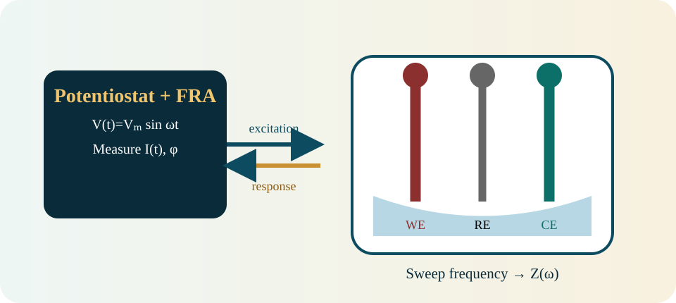
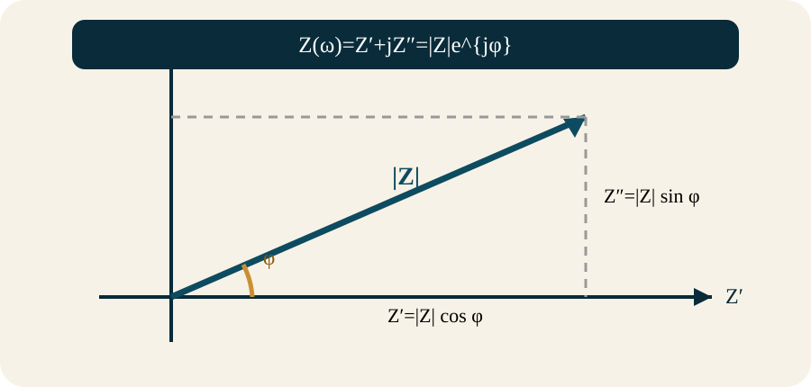
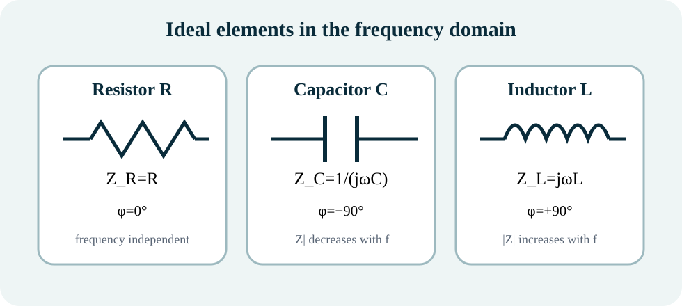
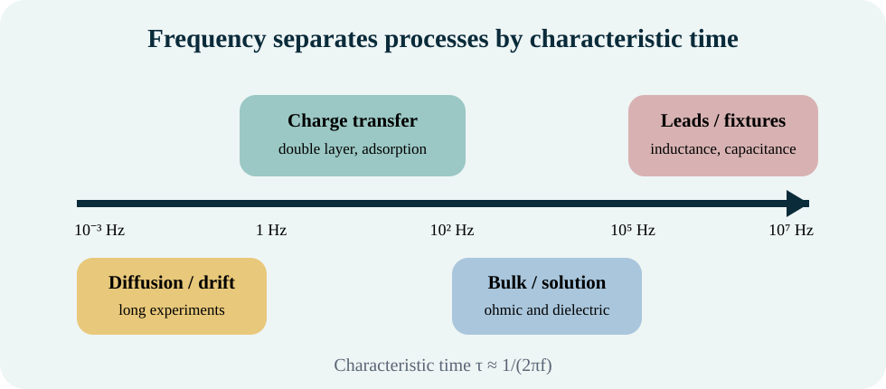
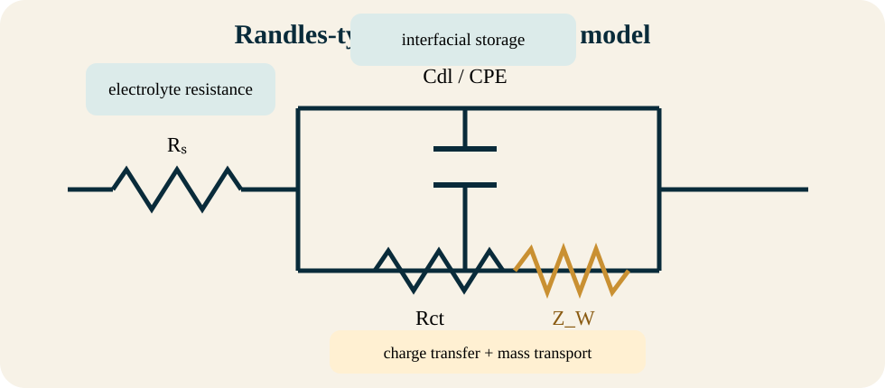
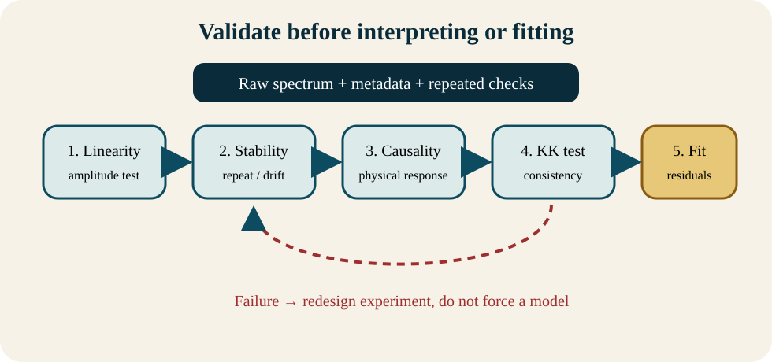

Electrochemical Impedance Spectroscopy · Public academic course · English is the default view · Arabic and bilingual views are available above.
AI Course Assistanceالمساعدة الذكية للمقرر
Use the AI Course Assistant to interact with the course materials in NotebookLM. You can ask questions, request explanations, generate summaries, review key concepts, and explore topics based on the learning resources provided for this course.استخدم المساعد الذكي للمقرر للتفاعل مع مواد المقرر في NotebookLM. يمكنك طرح الأسئلة وطلب الشرح وإنشاء الملخصات ومراجعة المفاهيم الأساسية واستكشاف الموضوعات اعتماداً على مصادر التعلم المتاحة للمقرر.
Note:ملاحظة:AI-generated responses should be used as a learning aid. Always verify important information against the official course materials and instructor guidance.ينبغي استخدام الإجابات التي يولدها الذكاء الاصطناعي كوسيلة مساعدة للتعلم، مع التحقق دائماً من المعلومات المهمة بالرجوع إلى مواد المقرر الرسمية وإرشادات المدرس.
Electrochemical Impedance Spectroscopyمطيافية الممانعة الكهروكيميائية · EIS 551
BILINGUAL UNIVERSITY COURSE · مقرر جامعي ثنائي اللغة
Electrochemical Impedance Spectroscopy
مطيافية الممانعة الكهروكيميائية
A complete upper-level course in small-signal theory, complex impedance, circuit and transport models, measurement design, validation, CNLS fitting, uncertainty, and applications to corrosion, coatings, materials, energy systems, sensors, and biomedical interfaces.
مقرر متقدم متكامل في نظرية الإشارة الصغيرة والممانعة المركبة ونماذج الدوائر والنقل وتصميم القياس والتحقق وملاءمة CNLS وعدم اليقين وتطبيقات التآكل والطلاءات والمواد والطاقة والمستشعرات والواجهات الطبية.
Frequency-resolved electrochemical system identification · تعريف الأنظمة الكهروكيميائية عبر التردد
This course develops Electrochemical Impedance Spectroscopy from the basic sinusoidal experiment to advanced interpretation. Students learn complex-number and phasor methods, ideal and distributed circuit elements, interfacial charge transfer, double-layer charging, diffusion, porous-electrode behavior, experimental instrumentation, Kramers–Kronig validation, complex nonlinear least-squares fitting, and uncertainty analysis. The course then applies these methods to corrosion, coatings, solid electrolytes, dielectric materials, batteries, supercapacitors, fuel cells, sensors, and biomedical systems. [1–4]
Mathematical treatment is integrated with practical experiment design. Students calculate impedance functions, characteristic frequencies, transport times, and fitted parameters; plan cells and frequency windows; verify linearity and stability; identify artifacts; compare models; and communicate bounded conclusions supported by independent evidence. Seven practical activities and an interactive simulator support independent learning.
يطور هذا المقرر مطيافية الممانعة الكهروكيميائية من تجربة الإشارة الجيبية الأساسية إلى التفسير المتقدم. يتعلم الطالب الأعداد المركبة والمتجهات والعناصر المثالية والموزعة وانتقال الشحنة وشحن الطبقة المزدوجة والانتشار والمسامية والأجهزة والتحقق بكرامرز–كرونغ وملاءمة المربعات الصغرى المركبة وتحليل عدم اليقين، ثم يطبقها على التآكل والطلاءات والإلكتروليتات الصلبة والعوازل والبطاريات والمكثفات وخلايا الوقود والمستشعرات والطب الحيوي. [1–4]
يدمج المقرر الرياضيات بتصميم التجربة. يحسب الطالب دوال الممانعة والترددات المميزة وأزمنة النقل والمعلمات، ويخطط الخلايا ومجالات التردد، ويتحقق من الخطية والثبات، ويشخص الشوائب، ويقارن النماذج، ويكتب استنتاجات محدودة مدعومة بأدلة مستقلة. تدعم سبعة أنشطة عملية ومحاكاة تفاعلية التعلم الذاتي.
Course aims · أهداف المقرر
Understand
Build a rigorous conceptual and mathematical foundation for complex frequency response.
Measure
Design valid EIS experiments with appropriate cells, perturbations, frequencies, calibration, and metadata.
Validate
Test linearity, stability, causality, consistency, repeatability, and uncertainty before fitting.
Model
Use circuits and physical models transparently, recognizing ambiguity and identifiability limits.
Apply
Connect spectra to materials, interfaces, corrosion, energy, sensors, and biomedical systems.
Decide
Produce bounded engineering conclusions rather than visually attractive but unsupported fits.
Course code, credit mapping, prerequisite policy, laboratory access, grading rules, accommodations, and instructor assignment are provisional and require local approval.
SOURCE GOVERNANCE · حوكمة المصادر
How the uploaded resources control the course · كيفية تحكم المصادر المرفوعة بالمقرر
Primary textbook
[1] controls the sequence from fundamentals to theory, measurement, analysis, corrosion, and energy applications. Its emphasis on interfaces, transport, equivalent circuits, ambiguity, instrumentation, and CNLS establishes the academic level.
Supporting sources
[2] supplies a practical catalogue of ideal and distributed models, instrumentation, validation, and multidisciplinary applications. [3–4] add modern modeling, battery, sensor, embedded, and measurement-system examples. [5] supports the corrosion-monitoring context. [6] defines the bilingual website, assessment, accessibility, and quality requirements.
الكتاب الرئيس
يتحكم [1] في التسلسل من الأسس إلى النظرية والقياس والتحليل والتآكل والطاقة، ويحدد مستوى المقرر من خلال تركيزه على الواجهات والنقل والدوائر والغموض والأجهزة وCNLS.
المصادر المساندة
يقدم [2] معالجة تطبيقية للنماذج والأجهزة والتحقق والتطبيقات، وتضيف [3–4] أمثلة حديثة في النمذجة والبطاريات والمستشعرات والأنظمة المدمجة، ويدعم [5] سياق مراقبة التآكل، ويحدد [6] متطلبات الموقع الثنائي والتقييم والإتاحة والجودة.
Copyright and figure policy · سياسة حقوق النشر والأشكال
The website uses original educational SVG diagrams and course-generated simulations. No textbook page image is embedded. Each conceptual visual is linked to the source relationship in its caption and visual manifest. Full bibliographic details appear once in the numbered references.
ILO1 — Explain the small-signal frequency-domain basis, assumptions, advantages, and limitations of EIS.ILO1 — شرح أساس EIS بالإشارة الصغيرة ومجال التردد وافتراضاتها ومزاياها وقيودها.
ILO2 — Manipulate complex impedance, admittance, capacitance, permittivity, and modulus representations with correct conventions.ILO2 — معالجة تمثيلات الممانعة والقبول والسعة والسماحية والمعامل باصطلاحات صحيحة.
ILO3 — Derive and interpret ideal-element, RC, Randles, CPE, Warburg, Gerischer, and distributed responses.ILO3 — اشتقاق وتفسير استجابات العناصر المثالية وRC وراندلز وCPE وواربورغ وجيرشر والأنظمة الموزعة.
ILO4 — Read Nyquist and Bode plots and extract justified limiting values and characteristic frequencies.ILO4 — قراءة نايكويست وبودي واستخراج القيم الحدية والترددات المميزة المبررة.
ILO5 — Design electrochemical cells, connections, amplitudes, frequency ranges, calibration, and metadata for valid measurements.ILO5 — تصميم الخلايا والتوصيلات والسعات ومجالات التردد والمعايرة والبيانات الوصفية لقياسات صالحة.
ILO7 — Perform and critique CNLS fitting, weighting, residual analysis, identifiability, DRT, and model selection.ILO7 — تنفيذ ونقد CNLS والأوزان والبواقي وقابلية التعيين وDRT واختيار النموذج.
ILO8 — Apply EIS to corrosion, coatings, materials, batteries, fuel cells, sensors, and biomedical systems.ILO8 — تطبيق EIS على التآكل والطلاءات والمواد والبطاريات وخلايا الوقود والمستشعرات والطب الحيوي.
ILO9 — Integrate EIS with independent electrochemical, chemical, structural, or performance evidence.ILO9 — دمج EIS مع أدلة كهروكيميائية أو كيميائية أو بنيوية أو أدائية مستقلة.
ILO10 — Communicate calculations, spectra, models, uncertainty, and limitations in professional Arabic and English.ILO10 — التواصل المهني بالحسابات والأطياف والنماذج وعدم اليقين والقيود بالعربية والإنجليزية.
ILO11 — Use data and software responsibly, retaining raw data, metadata, analysis history, and declared AI assistance.ILO11 — استخدام البيانات والبرمجيات بمسؤولية مع حفظ الخام والبيانات الوصفية وسجل التحليل والتصريح عن الذكاء الاصطناعي.
ILO12 — Design and defend a complete EIS investigation that answers a bounded scientific or engineering question.ILO12 — تصميم والدفاع عن دراسة EIS كاملة تجيب عن سؤال علمي أو هندسي محدود.
Bloom levels range from understand and apply in Modules 1–4 to analyze, evaluate, and create in Modules 8–12. The full activity and assessment mapping is provided in the ILO alignment matrix.
The simulator calculates exact or stated semi-empirical responses using the displayed equations. Curves are educational simulations, not experimental data. Vary parameters, inspect Nyquist and Bode plots, and download the calculated values.
يحسب المحاكي استجابات مثالية أو شبه تجريبية معلنة وفق المعادلات المعروضة. المنحنيات تعليمية وليست بيانات تجريبية. غيّر المعلمات وافحص نايكويست وبودي ونزّل القيم المحسوبة.
Nyquist: Z′ vs −Z″
Bode magnitude and phase
DATA WORKBENCH · منصة تحليل البيانات
Paste and inspect a spectrum · الصق طيفاً وافحصه
Paste comma- or tab-separated columns in the order frequency_Hz, Zreal_ohm, Zimag_ohm. The workbench plots a Nyquist spectrum and calculates descriptive estimates. It does not replace validation or CNLS fitting.
الصق أعمدة مفصولة بفاصلة أو جدولة بالترتيب: التردد، الجزء الحقيقي، الجزء التخيلي. ترسم المنصة نايكويست وتحسب تقديرات وصفية، ولا تستبدل التحقق أو CNLS.
Points—
HF Z′—
Max −Z″—
Peak f—
Imported Nyquist plot
01
MODULE 01 · الوحدة 01
Foundations of Electrochemical Impedance Spectroscopy
أسس مطيافية الممانعة الكهروكيميائية
4 h[1, Ch. 1, pp. 1–26; 2, Ch. 1, pp. 1–22]
Rationale
This module establishes what EIS measures, why a frequency sweep separates electrochemical processes, and which assumptions make the impedance function meaningful.
Prerequisite knowledge
Basic circuit laws, sinusoidal functions, electrochemical-cell terminology, and logarithms.
مبرر الوحدة
توضح هذه الوحدة ما الذي تقيسه مطيافية الممانعة، ولماذا يفصل المسح الترددي بين العمليات الكهروكيميائية، وما الافتراضات التي تجعل دالة الممانعة ذات معنى.
المعرفة السابقة
قوانين الدوائر الأساسية والدوال الجيبية ومصطلحات الخلية الكهروكيميائية واللوغاريتمات.
Learning outcomes
Define impedance as a complex frequency-response function.
Describe the standard small-amplitude single-sine EIS experiment.
Explain linearity, causality, stability, and time invariance.
Relate frequency to characteristic relaxation time and process separation.
مخرجات التعلم
تعريف الممانعة بوصفها دالة استجابة ترددية مركبة.
وصف تجربة EIS القياسية بإشارة جيبية صغيرة السعة.
شرح الخطية والسببية والثبات وعدم التغير مع الزمن.
ربط التردد بزمن الاسترخاء المميز وفصل العمليات.
Electrochemical impedance spectroscopy applies a small sinusoidal voltage or current to an electrode–electrolyte system and measures the amplitude ratio and phase difference of the response over a wide frequency range. The result is not one resistance value; it is a complex function, Z(ω), that changes with angular frequency and contains information about processes with different characteristic rates. [1,2]
تطبق مطيافية الممانعة الكهروكيميائية جهداً أو تياراً جيبياً صغير السعة على منظومة قطب–إلكتروليت، ثم تقيس نسبة السعات وفرق الطور للاستجابة عبر مجال واسع من الترددات. والنتيجة ليست قيمة مقاومة واحدة، بل دالة مركبة Z(ω) تتغير مع التردد الزاوي وتحمل معلومات عن عمليات ذات سرعات مميزة مختلفة. [1,2]
EIS is powerful because a fast process can respond at high frequency while a slow process becomes visible only at lower frequency. The same spectrum may contain contributions from leads, electrolyte resistance, dielectric storage, double-layer charging, electron transfer, adsorption, diffusion, porous geometry, and slow drift. Separating these effects requires both a valid experiment and a defensible physical model. [1,2]
تكمن قوة EIS في أن العملية السريعة تستجيب عند التردد العالي، بينما لا تظهر العملية البطيئة إلا عند التردد المنخفض. وقد يجمع الطيف الواحد مساهمات الأسلاك ومقاومة المحلول والتخزين العازل وشحن الطبقة المزدوجة وانتقال الإلكترون والامتزاز والانتشار والهندسة المسامية والانجراف البطيء. ويتطلب فصل هذه التأثيرات تجربة صالحة ونموذجاً فيزيائياً قابلاً للدفاع. [1,2]

Original educational illustration based on the scientific relationships in [1, Ch. 1, pp. 1–26; 2, Ch. 1, pp. 1–22]. Conceptual—not measured data.رسم تعليمي أصلي مبني على العلاقات العلمية في [1, Ch. 1, pp. 1–26; 2, Ch. 1, pp. 1–22]. مفاهيمي وليس بيانات مقاسة.
Core explanations · الشروحات الأساسية
The excitation–response experiment
تجربة الإثارة والاستجابة
A potentiostat or impedance analyzer applies v(t)=Vₘ sin(ωt) and measures i(t)=Iₘ sin(ωt+φ), or performs the reciprocal galvanostatic experiment. At each frequency, the impedance magnitude is Vₘ/Iₘ and the phase records the temporal displacement between voltage and current. Modern instruments repeat this measurement across logarithmically spaced frequencies. [1,2]
يطبق البوتنشيوستات أو محلل الممانعة العلاقة v(t)=Vₘ sin(ωt) ويقيس i(t)=Iₘ sin(ωt+φ)، أو ينفذ التجربة الجلفانوستاتيكية العكسية. عند كل تردد تساوي قيمة الممانعة Vₘ/Iₘ ويسجل الطور الإزاحة الزمنية بين الجهد والتيار. وتكرر الأجهزة الحديثة القياس على ترددات موزعة لوغاريتمياً. [1,2]
Small-signal linearization
الخطية بالإشارة الصغيرة
Electrochemical interfaces are generally nonlinear. EIS therefore uses a perturbation small enough that the response around the selected DC operating point is approximately linear. In a linear system, doubling the input doubles the output and a single sine produces negligible higher harmonics. An amplitude test is required when the linear range is uncertain. [1]
الواجهات الكهروكيميائية غير خطية عموماً. لذلك تستخدم EIS اضطراباً صغيراً يجعل الاستجابة حول نقطة التشغيل المستمرة خطية تقريباً. في النظام الخطي تؤدي مضاعفة الدخل إلى مضاعفة الخرج، ولا تولد الإشارة الجيبية المفردة توافقات مهمة. ويلزم اختبار السعة عندما يكون المجال الخطي غير معلوم. [1]
Causality and stability
السببية والثبات
Causality requires the measured response to follow the excitation rather than precede it. Stability or stationarity requires the system not to drift materially while the spectrum is collected. Corrosion, battery state of charge, adsorption, temperature, and open-circuit potential may change during a long low-frequency scan, invalidating an apparently smooth spectrum. [1,2]
تقتضي السببية أن تتبع الاستجابة الإثارة لا أن تسبقها. ويقتضي الثبات ألا تتغير المنظومة تغيراً جوهرياً أثناء جمع الطيف. قد يتغير التآكل أو حالة شحن البطارية أو الامتزاز أو الحرارة أو جهد الدائرة المفتوحة أثناء مسح منخفض التردد طويل، فيصبح الطيف الناعم ظاهرياً غير صالح. [1,2]
Frequency and characteristic time
التردد والزمن المميز
A process with characteristic time τ contributes most strongly near angular frequency ω≈1/τ, or f≈1/(2πτ). Fast wiring and bulk effects usually appear at high frequency; interfacial charge transfer appears at intermediate frequencies; slow diffusion, adsorption, or state drift appears at lower frequencies. Overlap prevents perfect separation. [1,2]
تظهر مساهمة العملية ذات الزمن المميز τ بقوة قرب ω≈1/τ أو f≈1/(2πτ). تظهر تأثيرات الأسلاك والحجم السريعة عادةً عند التردد العالي، وانتقال الشحنة عند الترددات المتوسطة، والانتشار أو الامتزاز أو الانجراف البطيء عند التردد المنخفض. يمنع التداخل الفصل الكامل. [1,2]
What parameters can be estimated
المعلمات التي يمكن تقديرها
Depending on the system and model, EIS can estimate solution or bulk resistance, conductivity, dielectric constant, interfacial capacitance, charge-transfer resistance, adsorption kinetics, diffusion-related parameters, coating resistance, pore resistance, and distributed relaxation behavior. These are model-dependent estimates rather than direct observations. [1,2]
يمكن، بحسب المنظومة والنموذج، تقدير مقاومة المحلول أو الحجم والتوصيلية وثابت العزل والسعة البينية ومقاومة انتقال الشحنة ومعلمات الامتزاز والانتشار ومقاومة الطلاء والمسام وسلوك الاسترخاء الموزع. وهي تقديرات معتمدة على النموذج وليست مشاهدات مباشرة. [1,2]
Advantages and limitations
المزايا والقيود
EIS can be non-destructive, sensitive, automatable, and capable of interrogating several processes in one test. Its principal limitations are model ambiguity, sensitivity to experimental artifacts, long low-frequency acquisition, nonstationarity, parameter correlation, and the temptation to assign every visible arc to a unique mechanism without independent evidence. [1,2]
يمكن أن تكون EIS غير إتلافية وحساسة وقابلة للأتمتة وقادرة على فحص عمليات متعددة في اختبار واحد. أهم قيودها غموض النماذج وحساسيتها للشوائب التجريبية وطول القياس منخفض التردد وعدم الثبات وترابط المعلمات وإغراء نسبة كل قوس إلى آلية وحيدة دون دليل مستقل. [1,2]
Key equations and interpretation · المعادلات الأساسية وتفسيرها
Equation · المعادلة
Purpose, assumptions, and meaning · الغرض والافتراضات والمعنى
v(t)=Vₘ sin(ωt)
Sinusoidal voltage perturbation; Vₘ in volts, ω in rad·s⁻¹.اضطراب الجهد الجيبي؛ Vₘ بالفولت وω بوحدة راديان/ثانية.
i(t)=Iₘ sin(ωt+φ)
Current response at the same frequency for a linear system.استجابة التيار عند التردد نفسه لنظام خطي.
Z(ω)=V(ω)/I(ω)=|Z|e^{jφ}
Definition of complex impedance in the frequency domain.تعريف الممانعة المركبة في مجال التردد.
ω=2πf; τ≈1/ω=1/(2πf)
Angular frequency and characteristic-time estimate.التردد الزاوي وتقدير الزمن المميز.
Fully worked example · مثال محلول بالكامل
A 10.0 mV sinusoidal perturbation produces a 0.200 mA response with phase −35°. The magnitude is |Z|=0.0100/0.000200=50.0 Ω. Rectangular components are Z′=50 cos(−35°)=41.0 Ω and Z″=50 sin(−35°)=−28.7 Ω. The negative imaginary part is consistent with net capacitive behavior under the usual electrochemical convention.
يولد اضطراب جيبي مقداره 10.0 ملي فولت تياراً مقداره 0.200 ملي أمبير بزاوية طور −35°. تكون القيمة |Z|=0.0100/0.000200=50.0 أوم. المركبتان هما Z′=41.0 أوم وZ″=−28.7 أوم. وتشير المركبة التخيلية السالبة إلى سلوك سعوي صافٍ وفق الاصطلاح الكهروكيميائي المعتاد.
Partially guided problem · مسألة موجهة جزئياً
Guided problem: Repeat the calculation for |Z|=200 Ω and φ=−60°. Check that Z′²+Z″²=|Z|² and state which component dominates.
مسألة موجهة: أعد الحساب عندما |Z|=200 أوم وφ=−60°. تحقق من أن Z′²+Z″²=|Z|² وحدد المركبة المسيطرة.
Common misconception · مفهوم خاطئ
Misconception: “EIS directly reveals the mechanism.” Correction: EIS measures an electrical response. A mechanism is inferred by combining a valid spectrum, a model, parameter trends, and independent chemical or structural evidence.
مفهوم خاطئ: «تكشف EIS الآلية مباشرة». التصحيح: تقيس EIS استجابة كهربائية، وتستنتج الآلية من طيف صالح ونموذج واتجاهات المعلمات وأدلة كيميائية أو بنيوية مستقلة.
Practical or analytical activity · نشاط عملي أو تحليلي
Amplitude-linearity exercise: acquire or simulate spectra at 2, 5, 10, and 20 mV. Normalize the current response, inspect higher harmonics if available, and select the largest amplitude that preserves linear response and adequate signal-to-noise ratio.
تمرين خطية السعة: اجمع أو حاكِ أطيافاً عند 2 و5 و10 و20 ملي فولت. طبّع استجابة التيار وافحص التوافقات العليا إن أمكن، واختر أكبر سعة تحفظ الخطية ونسبة إشارة إلى ضوضاء مناسبة.
Quick mastery check · تحقق سريع من الإتقان
Principal sources / المصادر الرئيسة: [1, Ch. 1, pp. 1–26; 2, Ch. 1, pp. 1–22]. Source governance: equations and diagrams are course adaptations or original redraws; consult the numbered reference list for full bibliographic information.
02
MODULE 02 · الوحدة 02
Complex Numbers, Phasors, and Immittance Functions
الأعداد المركبة والمتجهات الطورية ودوال الممانعة
4 h[1, Sec. 1.1.3–1.1.4; 2, Sec. 1.1–1.2]
Rationale
EIS data are complex-valued. This module develops the mathematical language needed to transform, plot, compare, and interpret impedance-related functions without losing sign or convention information.
Prerequisite knowledge
Module 1 and basic trigonometry.
مبرر الوحدة
بيانات EIS مركبة القيمة. تطور هذه الوحدة اللغة الرياضية اللازمة لتحويل دوال الممانعة ورسمها ومقارنتها وتفسيرها دون فقدان معلومات الإشارة أو الاصطلاح.
المعرفة السابقة
الوحدة الأولى وعلم المثلثات الأساسي.
Learning outcomes
Convert impedance between rectangular and polar forms.
Calculate admittance and explain reciprocal transformations.
Use electrochemical Nyquist sign conventions correctly.
Relate impedance, complex capacitance, permittivity, and modulus representations.
مخرجات التعلم
تحويل الممانعة بين الصيغتين الديكارتية والقطبية.
حساب القبول وشرح التحويلات التبادلية.
استخدام اصطلاح إشارة نايكويست الكهروكيميائي بصورة صحيحة.
A sinusoidal steady-state signal can be represented by a phasor. The time dependence is carried by e^{jωt}, while amplitude and phase are encoded in a complex number. This converts differential relations for capacitors, inductors, diffusion, and kinetic processes into algebraic relations in the frequency domain. [1,2]
يمكن تمثيل الإشارة الجيبية في الحالة المستقرة بمتجه طوري. يحمل e^{jωt} الاعتماد الزمني، بينما تُشفّر السعة والطور في عدد مركب. يحول ذلك العلاقات التفاضلية للمكثفات والمحاثات والانتشار والحركية إلى علاقات جبرية في مجال التردد. [1,2]
No single representation is universally best. Impedance emphasizes resistive and interfacial arcs; admittance emphasizes parallel conductive paths; complex capacitance emphasizes storage; electric modulus can suppress electrode polarization and highlight bulk relaxation in dielectric or ionic materials. The chosen function must match the scientific question. [1,2]
لا يوجد تمثيل واحد أفضل دائماً. تبرز الممانعة المقاومات والأقواس البينية، ويبرز القبول المسارات الموصلة المتوازية، وتبرز السعة المركبة التخزين، وقد يقلل المعامل الكهربائي استقطاب الأقطاب ويظهر استرخاء الحجم في المواد العازلة أو الأيونية. يجب أن يناسب التمثيل السؤال العلمي. [1,2]

Original educational illustration based on the scientific relationships in [1, Sec. 1.1.3–1.1.4; 2, Sec. 1.1–1.2]. Conceptual—not measured data.رسم تعليمي أصلي مبني على العلاقات العلمية في [1, Sec. 1.1.3–1.1.4; 2, Sec. 1.1–1.2]. مفاهيمي وليس بيانات مقاسة.
Core explanations · الشروحات الأساسية
Rectangular and polar forms
الصيغتان الديكارتية والقطبية
Write Z=Z′+jZ″ or Z=|Z|(cosφ+j sinφ). The real component is in phase with the excitation; the imaginary component is in quadrature. Under the common convention, capacitive impedance has Z″<0 and inductive impedance has Z″>0. [1,2]
تكتب الممانعة Z=Z′+jZ″ أو Z=|Z|(cosφ+j sinφ). المركبة الحقيقية متوافقة الطور مع الإثارة، والمركبة التخيلية متعامدة معها. وفق الاصطلاح الشائع تكون Z″<0 للسلوك السعوي وZ″>0 للسلوك الحثي. [1,2]
Euler and phasor notation
هوية أويلر والمتجه الطوري
Euler’s identity e^{jφ}=cosφ+j sinφ provides the bridge between polar and rectangular forms. Multiplying complex quantities adds phase angles; division subtracts them. This is why V/I yields the impedance phase difference directly. [1]
تربط هوية أويلر e^{jφ}=cosφ+j sinφ بين الصيغتين. يجمع ضرب الكميات المركبة زوايا الطور، ويطرحها القسمة؛ لذلك تعطي V/I فرق طور الممانعة مباشرة. [1]
Admittance
القبول
Admittance Y=1/Z=G+jB is often clearer for parallel processes. A large parallel conductance appears directly in G, whereas the same feature may be compressed in an impedance plot. Reciprocal transformation changes geometry, so a semicircle in Z need not remain a semicircle in Y. [1,2]
القبول Y=1/Z=G+jB أوضح أحياناً للعمليات المتوازية. يظهر التوصيل الموازي الكبير مباشرةً في G، بينما قد ينضغط في مخطط الممانعة. يغير التحويل التبادلي الهندسة، لذلك لا يبقى القوس في Z بالضرورة قوساً في Y. [1,2]
Complex capacitance and modulus
السعة المركبة والمعامل
A complex capacitance may be defined as C*=1/(jωZ). For a sample cell with vacuum capacitance C₀, complex permittivity is ε*=C*/C₀ and electric modulus is M*=1/ε*=jωC₀Z. Sign conventions and Fourier definitions must be stated because literature conventions vary. [1,2]
يمكن تعريف C*=1/(jωZ). ولخلية سعتها الفراغية C₀ تكون ε*=C*/C₀ وM*=1/ε*=jωC₀Z. يجب بيان اصطلاح الإشارة وتعريف فورييه لأن الاصطلاحات تختلف بين المراجع. [1,2]
Normalization
التطبيع
Impedance may be reported as total Ω, area-normalized Ω·cm², or geometry-normalized resistivity. Capacitance may be total F or areal F·cm⁻². Comparison is valid only when electrode area, thickness, and cell constant are documented and normalization is consistent. [1]
قد تعرض الممانعة بالأوم أو بالأوم·سم² بعد التطبيع بالمساحة أو كمقاومية بعد التطبيع بالهندسة. وقد تعرض السعة بالفاراد أو فاراد/سم². لا تصح المقارنة إلا مع توثيق المساحة والسماكة وثابت الخلية واتساق التطبيع. [1]
Sign and plotting conventions
اصطلاحات الإشارة والرسم
Electrochemical Nyquist plots often display −Z″ upward so capacitive arcs appear above the real axis. Mathematical complex-plane plots display Z″ upward. The axis label must therefore explicitly state Z″ or −Z″; otherwise inductive and capacitive interpretations can be reversed. [1,2]
ترسم مخططات نايكويست الكهروكيميائية غالباً −Z″ إلى الأعلى فتظهر الأقواس السعوية فوق المحور الحقيقي، بينما يرسم المستوى المركب الرياضي Z″ إلى الأعلى. يجب تسمية المحور بوضوح وإلا انعكس تفسير الحث والسعة. [1,2]
Key equations and interpretation · المعادلات الأساسية وتفسيرها
Equation · المعادلة
Purpose, assumptions, and meaning · الغرض والافتراضات والمعنى
Z=Z′+jZ″=|Z|(cosφ+j sinφ)
Rectangular and polar impedance forms.الصيغتان الديكارتية والقطبية للممانعة.
|Z|=√(Z′²+Z″²); φ=atan2(Z″,Z′)
Magnitude and quadrant-correct phase.القيمة وزاوية الطور الصحيحة الربع.
Y=1/Z=(Z′−jZ″)/(Z′²+Z″²)
Admittance from impedance.حساب القبول من الممانعة.
C*=1/(jωZ); M*=jωC₀Z
Complex capacitance and electric modulus definitions.تعريف السعة المركبة والمعامل الكهربائي.
Fully worked example · مثال محلول بالكامل
For Z=30−j40 Ω, |Z|=50 Ω and φ=atan2(−40,30)=−53.13°. The admittance is (30+j40)/2500=0.012+j0.016 S. Conductance is 12 mS and susceptance is +16 mS. Verify that |Y|=1/|Z|=0.020 S.
عندما Z=30−j40 أوم تكون |Z|=50 أوم وφ=−53.13°. القبول Y=(30+j40)/2500=0.012+j0.016 سيمنز. التوصيل 12 ملي سيمنز والمسامحة 16 ملي سيمنز. تحقق من أن |Y|=1/|Z|=0.020 سيمنز.
Partially guided problem · مسألة موجهة جزئياً
Guided problem: A material cell has C₀=5 pF and Z=2.0 MΩ−j1.0 MΩ at 1 kHz. Calculate C* and M*. State all units and the sign convention used.
Misconception: “A positive plotted vertical coordinate always means inductive behavior.” Correction: many Nyquist plots use −Z″, so a positive plotted value can represent a negative imaginary impedance and therefore capacitive behavior.
مفهوم خاطئ: «القيمة الرأسية الموجبة تعني دائماً سلوكاً حثياً». التصحيح: تستخدم مخططات كثيرة −Z″، لذلك قد تمثل القيمة الموجبة ممانعة تخيلية سالبة وسلوكاً سعويّاً.
Practical or analytical activity · نشاط عملي أو تحليلي
Representation laboratory: transform one supplied spectrum into Z, Y, C*, and M* forms. Identify which representation most clearly separates bulk, grain-boundary, and electrode-polarization contributions and justify the choice.
مختبر التمثيلات: حوّل طيفاً معطى إلى Z وY وC* وM*. حدد التمثيل الذي يفصل مساهمات الحجم وحدود الحبيبات واستقطاب القطب بوضوح أكبر وعلل الاختيار.
Quick mastery check · تحقق سريع من الإتقان
Principal sources / المصادر الرئيسة: [1, Sec. 1.1.3–1.1.4; 2, Sec. 1.1–1.2]. Source governance: equations and diagrams are course adaptations or original redraws; consult the numbered reference list for full bibliographic information.
03
MODULE 03 · الوحدة 03
Ideal Elements and Simple RC Networks
العناصر المثالية وشبكات RC البسيطة
4 h[1, Sec. 1.3 and Ch. 2; 2, Ch. 3–4]
Rationale
Equivalent-circuit interpretation begins with the exact frequency responses of ideal resistors, capacitors, inductors, and their series or parallel combinations.
Prerequisite knowledge
Modules 1–2 and Kirchhoff’s laws.
مبرر الوحدة
يبدأ تفسير الدوائر المكافئة بالاستجابات الترددية الدقيقة للمقاومات والمكثفات والمحاثات المثالية وتوصيلاتها على التوالي أو التوازي.
المعرفة السابقة
الوحدتان 1–2 وقوانين كيرشوف.
Learning outcomes
Derive the impedance of R, C, and L elements.
Combine elements in series and parallel.
Interpret the time constant and characteristic frequency of an RC process.
Predict Nyquist and Bode shapes for simple circuits.
مخرجات التعلم
اشتقاق ممانعة عناصر R وC وL.
جمع العناصر على التوالي والتوازي.
تفسير ثابت الزمن والتردد المميز لعملية RC.
توقع أشكال نايكويست وبودي للدوائر البسيطة.
Ideal elements provide a mathematical vocabulary for representing energy dissipation, energy storage, and electromagnetic or wiring effects. They are abstractions: a real resistor has parasitic capacitance and inductance, a real capacitor leaks and disperses, and a real electrochemical interface is spatially heterogeneous. [1,2]
توفر العناصر المثالية لغة رياضية لتمثيل تبديد الطاقة وتخزينها والتأثيرات الكهرومغناطيسية أو تأثيرات الأسلاك. وهي تجريدات؛ فالمقاومة الحقيقية لها سعة ومحاثة طفيليتان، والمكثف الحقيقي يتسرب ويتشتت، والواجهة الكهروكيميائية غير متجانسة مكانياً. [1,2]
Despite these limitations, simple circuits are essential because their spectra have recognizable shapes and exact parameter relations. A model is useful when each element is connected to a plausible process, parameter values are physically reasonable, and alternative models are tested rather than ignored. [1,2]
مع ذلك تبقى الدوائر البسيطة أساسية لأن أطيافها ذات أشكال معروفة وعلاقات معلمات دقيقة. يكون النموذج مفيداً عندما يرتبط كل عنصر بعملية محتملة وتكون القيم معقولة وتختبر النماذج البديلة. [1,2]

Original educational illustration based on the scientific relationships in [1, Sec. 1.3 and Ch. 2; 2, Ch. 3–4]. Conceptual—not measured data.رسم تعليمي أصلي مبني على العلاقات العلمية في [1, Sec. 1.3 and Ch. 2; 2, Ch. 3–4]. مفاهيمي وليس بيانات مقاسة.
Core explanations · الشروحات الأساسية
Ideal resistor
المقاومة المثالية
For an ideal resistor Z_R=R. Magnitude is constant and phase is 0°. It appears as a point on the real axis in a Nyquist plot and as a horizontal magnitude line with zero phase in Bode plots. Electrolyte, bulk, contact, and electronic resistances may approximate this behavior over a limited range. [1,2]
للمقاومة المثالية Z_R=R. القيمة ثابتة والطور 0°. تظهر كنقطة على المحور الحقيقي في نايكويست وكخط أفقي للقيمة وطور صفري في بودي. قد تقارب مقاومات الإلكتروليت والحجم والتلامس والتوصيل الإلكتروني هذا السلوك ضمن مجال محدود. [1,2]
Ideal capacitor
المكثف المثالي
For an ideal capacitor Z_C=1/(jωC)=−j/(ωC). Magnitude decreases with frequency and phase is −90°. In a Nyquist plot it lies on the negative imaginary axis. Double layers and dielectric films often deviate from ideal capacitance because of roughness, distributed kinetics, leakage, or absorption. [1,2]
للمكثف Z_C=1/(jωC)=−j/(ωC). تنخفض القيمة مع التردد والطور −90°. يقع على المحور التخيلي السالب. تنحرف الطبقات المزدوجة والأغشية عن المثالية بسبب الخشونة والحركية الموزعة والتسرب والامتصاص. [1,2]
Ideal inductor
المحاثة المثالية
For an ideal inductor Z_L=jωL. Magnitude rises with frequency and phase is +90°. High-frequency inductive behavior commonly arises from cables, leads, current collectors, or instrument geometry; low-frequency inductive loops may instead reflect adsorbed intermediates or relaxation processes. [1,2]
للمحاثة Z_L=jωL. تزداد القيمة مع التردد والطور +90°. ينشأ السلوك الحثي عالي التردد غالباً من الكابلات والأسلاك والمجمعات والهندسة، بينما قد تعكس الحلقات منخفضة التردد وسائط ممتزة أو عمليات استرخاء. [1,2]
Series and parallel rules
قواعد التوالي والتوازي
Series impedances add: Z_total=ΣZ_k. Parallel admittances add: Y_total=ΣY_k, so Z_total=(Σ1/Z_k)⁻¹. Confusing these rules can produce a visually plausible but physically incorrect circuit. Circuit topology represents assumed process connectivity. [1,2]
تجمع الممانعات على التوالي Z_total=ΣZ_k، وتجمع القبولات على التوازي Y_total=ΣY_k ثم Z_total=(Σ1/Z_k)⁻¹. يؤدي خلط القاعدتين إلى دائرة تبدو مقنعة لكنها خاطئة فيزيائياً. تمثل طوبولوجيا الدائرة افتراض اتصال العمليات. [1,2]
Parallel RC semicircle
نصف دائرة RC المتوازية
A parallel R‖C element has Z=R/(1+jωRC). Its Nyquist locus is an ideal semicircle of diameter R. The apex occurs at ωRC=1, where −Z″=R/2 and Z′=R/2. A series resistance shifts the entire arc along the real axis. [1,2]
للعنصر R‖C العلاقة Z=R/(1+jωRC)، ومساره نصف دائرة مثالية قطرها R. تقع القمة عند ωRC=1 حيث −Z″=R/2 وZ′=R/2. تزحزح مقاومة السلسلة القوس كله على المحور الحقيقي. [1,2]
Multiple time constants
ثوابت زمن متعددة
Two separated R‖C branches can produce two arcs or two phase peaks. When time constants differ by less than roughly one to two decades, the features overlap and individual parameters become strongly correlated. A shoulder may be more informative than a visually resolved second semicircle. [1,2]
قد ينتج فرعان R‖C منفصلان قوسين أو قمتي طور. عندما تختلف الثوابت الزمنية بأقل من عقد أو عقدين تتداخل السمات وتترابط المعلمات بقوة. وقد يكون الكتف الطيفي أهم من ظهور نصف دائرة ثانية كاملة. [1,2]
Key equations and interpretation · المعادلات الأساسية وتفسيرها
Equation · المعادلة
Purpose, assumptions, and meaning · الغرض والافتراضات والمعنى
Z_R=R; Z_C=1/(jωC); Z_L=jωL
Ideal resistor, capacitor, and inductor impedances.ممانعات المقاومة والمكثف والمحاثة المثالية.
Z_series=ΣZ_k; 1/Z_parallel=Σ(1/Z_k)
Series and parallel combination rules.قواعد الجمع على التوالي والتوازي.
Z_{R∥C}=R/(1+jωRC)
Parallel RC impedance.ممانعة RC المتوازية.
τ=RC; f₀=1/(2πRC)
Time constant and characteristic frequency.ثابت الزمن والتردد المميز.
Fully worked example · مثال محلول بالكامل
For R=1.00 kΩ and C=10.0 μF, τ=0.0100 s and f₀=15.9 Hz. At f₀, Z=(500−j500) Ω for the parallel branch. With a 100 Ω series resistance, the total is 600−j500 Ω; the high-frequency intercept is 100 Ω and the low-frequency intercept is 1100 Ω.
عندما R=1.00 كيلوأوم وC=10.0 ميكروفاراد يكون τ=0.0100 ثانية وf₀=15.9 هرتز. عند f₀ تكون ممانعة الفرع 500−j500 أوم. ومع مقاومة سلسلة 100 أوم تصبح الممانعة الكلية 600−j500 أوم، والاعتراض عالي التردد 100 أوم ومنخفض التردد 1100 أوم.
Partially guided problem · مسألة موجهة جزئياً
Guided problem: Design an R‖C dummy cell with an arc diameter of 500 Ω and an apex at 100 Hz. Calculate C and predict both real-axis intercepts when R_s=25 Ω.
مسألة موجهة: صمم خلية وهمية R‖C قطر قوسها 500 أوم وقمتها عند 100 هرتز. احسب C وتنبأ باعتراضي المحور الحقيقي عندما R_s=25 أوم.
Common misconception · مفهوم خاطئ
Misconception: “Every semicircle is a charge-transfer process.” Correction: any first-order relaxation can generate an RC-like arc. The physical assignment requires geometry, chemistry, bias, temperature, and independent evidence.
مفهوم خاطئ: «كل نصف دائرة عملية انتقال شحنة». التصحيح: يمكن لأي استرخاء من الرتبة الأولى أن يولد قوساً شبيهاً بـRC، ويتطلب التعيين الفيزيائي معلومات الهندسة والكيمياء والانحياز والحرارة وأدلة مستقلة.
Practical or analytical activity · نشاط عملي أو تحليلي
Dummy-cell laboratory: measure a certified R_s−(R‖C) circuit, compare measured and calculated spectra, identify the usable frequency window, and quantify the effect of adding cable length or a known stray capacitor.
مختبر الخلية الوهمية: قس دائرة معتمدة R_s−(R‖C)، وقارن الطيف المقاس بالمحسوب، وحدد مجال التردد القابل للاستخدام، وقِس أثر زيادة طول الكابل أو إضافة مكثف طفيلي معلوم.
Quick mastery check · تحقق سريع من الإتقان
Principal sources / المصادر الرئيسة: [1, Sec. 1.3 and Ch. 2; 2, Ch. 3–4]. Source governance: equations and diagrams are course adaptations or original redraws; consult the numbered reference list for full bibliographic information.
04
MODULE 04 · الوحدة 04
Nyquist, Bode, and Spectral Interpretation
مخططات نايكويست وبودي وتفسير الأطياف
4 h[1, Sec. 1.3; 2, Ch. 2]
Rationale
Graphical representations reveal different aspects of the same complex data. Competent interpretation requires reading frequency direction, intercepts, slopes, phase peaks, and overlap without treating shapes as unique fingerprints.
Prerequisite knowledge
Modules 1–3.
مبرر الوحدة
تكشف التمثيلات الرسومية جوانب مختلفة من البيانات المركبة نفسها. يتطلب التفسير الكفء قراءة اتجاه التردد والاعتراضات والميول وقمم الطور والتداخل دون اعتبار الأشكال بصمات فريدة.
المعرفة السابقة
الوحدات 1–3.
Learning outcomes
Read Nyquist and Bode plots with correct axes and frequency direction.
Extract ideal intercepts, arc diameters, and characteristic frequencies.
Recognize overlapping time constants and distributed behavior.
State what graphical features cannot prove by themselves.
مخرجات التعلم
قراءة مخططات نايكويست وبودي بمحاور واتجاه تردد صحيحين.
A Nyquist plot displays one complex coordinate pair per frequency, usually Z′ against −Z″. It is compact and makes real-axis intercepts and arc diameters easy to see, but frequency is only an implicit parameter. Bode plots display |Z| and phase against logarithmic frequency, preserving the frequency sequence and often revealing overlapping processes more clearly. [1,2]
يعرض مخطط نايكويست زوجاً مركباً لكل تردد، عادةً Z′ مقابل −Z″. وهو مضغوط ويسهل رؤية الاعتراضات والأقطار، لكن التردد متغير ضمني. تعرض مخططات بودي |Z| والطور مقابل لوغاريتم التردد وتحفظ تسلسل التردد وقد تكشف العمليات المتداخلة بوضوح أكبر. [1,2]
Interpretation should begin with the frequency labels, not with visual pattern matching. The high-frequency end may be affected by lead inductance or fixture capacitance; the low-frequency end may be affected by drift or incomplete equilibration. A missing intercept may simply lie outside the measured window. [1,2]
يجب أن يبدأ التفسير من علامات التردد لا من مطابقة الشكل بصرياً. قد يتأثر الطرف عالي التردد بمحاثة الأسلاك أو سعة التركيب، وقد يتأثر الطرف المنخفض بالانجراف أو عدم الاتزان. وقد يكون الاعتراض المفقود خارج مجال القياس فقط. [1,2]

Original educational illustration based on the scientific relationships in [1, Sec. 1.3; 2, Ch. 2]. Conceptual—not measured data.رسم تعليمي أصلي مبني على العلاقات العلمية في [1, Sec. 1.3; 2, Ch. 2]. مفاهيمي وليس بيانات مقاسة.
Core explanations · الشروحات الأساسية
Nyquist plot
مخطط نايكويست
Each point is Z(ω). Frequency commonly decreases from the left high-frequency intercept toward the right low-frequency response, but arrows or labels are essential. Arc diameter can equal a resistance only for the corresponding ideal topology and complete frequency coverage. [1,2]
تمثل كل نقطة Z(ω). ينخفض التردد عادةً من الاعتراض الأيسر عالي التردد نحو الاستجابة اليمنى منخفضة التردد، لكن الأسهم أو علامات التردد ضرورية. لا يساوي قطر القوس مقاومة إلا لطوبولوجيا مثالية مناسبة ومع تغطية ترددية كاملة. [1,2]
Bode magnitude
قيمة بودي
Plotting log|Z| versus log f exposes power-law slopes. A resistor has slope 0; an ideal capacitor has slope −1; an ideal inductor has slope +1. Plateaus can indicate limiting resistances, while transitions indicate characteristic frequencies. [1,2]
يكشف رسم log|Z| مقابل log f ميول قوانين القوة. ميل المقاومة 0، والمكثف المثالي −1، والمحاثة +1. قد تمثل الهضاب مقاومات حدية، وتمثل الانتقالات ترددات مميزة. [1,2]
Bode phase
طور بودي
Phase distinguishes energy storage from dissipation. A parallel RC process produces a phase minimum whose location and depth depend on series resistance and overlap. Two phase minima may identify two separated processes even when the Nyquist plot shows one distorted arc. [1,2]
يميز الطور بين تخزين الطاقة وتبديدها. تنتج عملية RC متوازية حداً أدنى للطور يتأثر موضعه وعمقه بمقاومة السلسلة والتداخل. وقد تكشف قمتان عمليتين منفصلتين حتى إذا بدا نايكويست قوساً واحداً مشوهاً. [1,2]
Intercepts and arc diameter
الاعتراضات وقطر القوس
For R_s+(R_ct‖C_dl), the high-frequency intercept is R_s and the low-frequency intercept is R_s+R_ct. The difference is R_ct. If the low-frequency limit is not reached, extrapolating a diameter can be highly model-dependent. [1,2]
لدائرة R_s+(R_ct‖C_dl) يكون الاعتراض عالي التردد R_s والمنخفض R_s+R_ct، والفرق R_ct. إذا لم يبلغ القياس النهاية منخفضة التردد يصبح استقراء القطر معتمداً بشدة على النموذج. [1,2]
Depressed arcs and shoulders
الأقواس المنخفضة والأكتاف
A depressed arc may arise from a distribution of time constants, roughness, inhomogeneous current, porous geometry, or multiple unresolved processes. A shoulder or phase asymmetry signals that a one-time-constant model may be inadequate. [1,2]
قد ينتج القوس المنخفض من توزيع ثوابت زمن أو خشونة أو تيار غير متجانس أو هندسة مسامية أو عمليات متداخلة. يدل الكتف أو عدم تماثل الطور على أن نموذج ثابت زمني واحد قد لا يكفي. [1,2]
Data density and frequency spacing
كثافة البيانات وتباعد التردد
Logarithmic spacing provides approximately uniform coverage per decade. Too few points can hide a narrow process; too many low-frequency points can lengthen a test until the system drifts. Point density should be selected according to process bandwidth, validation needs, and experiment duration. [2]
يوفر التباعد اللوغاريتمي تغطية متقاربة لكل عقد. قد تخفي النقاط القليلة عملية ضيقة، وقد تطيل النقاط المنخفضة الكثيرة الاختبار حتى تنجرف المنظومة. تختار الكثافة وفق عرض العملية والتحقق ومدة التجربة. [2]
Key equations and interpretation · المعادلات الأساسية وتفسيرها
Equation · المعادلة
Purpose, assumptions, and meaning · الغرض والافتراضات والمعنى
Z′=R/[1+(ωRC)²]; −Z″=ωR²C/[1+(ωRC)²]
Nyquist coordinates for an ideal parallel RC element.إحداثيات نايكويست لعنصر RC متوازٍ مثالي.
(Z′−R/2)²+(Z″)²=(R/2)²
Semicircle equation for R∥C.معادلة نصف الدائرة لفرع R∥C.
f_{max}=1/(2πRC)
Frequency at the apex of the ideal arc.تردد قمة القوس المثالي.
d log|Z|/d log f = 0, −1, +1
Ideal slopes for R, C, and L regions.الميول المثالية لمناطق R وC وL.
Fully worked example · مثال محلول بالكامل
A Nyquist spectrum has high- and low-frequency real intercepts at 12 Ω and 92 Ω, with an arc apex at 20 Hz. For the ideal model, R_s=12 Ω, R_ct=80 Ω, and C_dl=1/(2π·20·80)=99.5 μF. If the measured phase peak is broad and asymmetric, report this as an ideal first estimate rather than a unique physical result.
لطيف نايكويست اعتراضان حقيقيان عند 12 و92 أوم وقمة عند 20 هرتز. في النموذج المثالي R_s=12 أوم وR_ct=80 أوم وC_dl=99.5 ميكروفاراد. إذا كانت قمة الطور عريضة وغير متماثلة فيجب عرض هذه القيم كتقدير أولي مثالي لا كنتيجة فيزيائية فريدة.
Partially guided problem · مسألة موجهة جزئياً
Guided problem: A Bode magnitude plot changes from a 500 Ω low-frequency plateau to a 50 Ω high-frequency plateau. Estimate the relaxation resistance and explain what additional information is needed to calculate capacitance.
مسألة موجهة: ينتقل مخطط بودي من هضبة 500 أوم منخفضة التردد إلى 50 أوم عالية التردد. قدّر مقاومة الاسترخاء واذكر المعلومات الإضافية اللازمة لحساب السعة.
Common misconception · مفهوم خاطئ
Misconception: “The largest arc is always the most important process.” Correction: arc size reflects impedance contribution, not necessarily rate limitation, energy loss, safety significance, or degradation importance.
مفهوم خاطئ: «أكبر قوس هو دائماً أهم عملية». التصحيح: يعكس حجم القوس مساهمة الممانعة، لا بالضرورة تحديد المعدل أو فقد الطاقة أو أهمية السلامة أو التدهور.
Practical or analytical activity · نشاط عملي أو تحليلي
Plot-reading studio: annotate supplied Nyquist and Bode plots with frequency direction, intercepts, slopes, phase extrema, suspected artifacts, and the minimum additional experiment needed to test each assignment.
استوديو قراءة المخططات: علّم مخططات نايكويست وبودي باتجاه التردد والاعتراضات والميول وقيم الطور القصوى والشوائب المحتملة وأقل تجربة إضافية لاختبار كل تعيين.
Quick mastery check · تحقق سريع من الإتقان
Principal sources / المصادر الرئيسة: [1, Sec. 1.3; 2, Ch. 2]. Source governance: equations and diagrams are course adaptations or original redraws; consult the numbered reference list for full bibliographic information.
05
MODULE 05 · الوحدة 05
Electrochemical Interfaces and the Randles Model
الواجهات الكهروكيميائية ونموذج راندلز
4.5 h[1, Sec. 2.1.4 and corrosion fundamentals; 2, Ch. 5]
Rationale
This module maps solution resistance, interfacial charge storage, electron transfer, and reaction pathways onto physically meaningful impedance elements.
Prerequisite knowledge
Modules 1–4 and elementary electrode kinetics.
مبرر الوحدة
تربط هذه الوحدة مقاومة المحلول وتخزين الشحنة البينية وانتقال الإلكترون ومسارات التفاعل بعناصر ممانعة ذات معنى فيزيائي.
المعرفة السابقة
الوحدات 1–4 وحركية الأقطاب الأساسية.
Learning outcomes
Explain the physical origins of R_s, C_dl, and R_ct.
Derive and interpret a Randles-type impedance.
Relate charge-transfer resistance to exchange current near equilibrium.
Recognize when adsorption or film elements are required.
مخرجات التعلم
شرح الأصل الفيزيائي لـR_s وC_dl وR_ct.
اشتقاق وتفسير ممانعة من نوع راندلز.
ربط مقاومة انتقال الشحنة بتيار التبادل قرب الاتزان.
تمييز الحالات التي تتطلب عناصر امتزاز أو غشاء.
At an electrode–electrolyte interface, current may charge the electrical double layer or cross the interface through faradaic reactions. These paths act approximately in parallel because the same interfacial potential perturbation drives both. Solution and lead resistance are in series with the interface because all current must pass through them. [1,2]
عند واجهة القطب–الإلكتروليت قد يشحن التيار الطبقة المزدوجة أو يعبر الواجهة بتفاعل فارادي. يعمل المساران تقريباً على التوازي لأن اضطراب الجهد البيني نفسه يدفعهما. تقع مقاومة المحلول والأسلاك على التوالي لأن كل التيار يمر خلالها. [1,2]
The Randles model is therefore a compact hypothesis about process connectivity. It is not a universal electrochemical circuit. Surface films, adsorption, porous current distributions, multiple reactions, finite diffusion, and instrument artifacts may require additional or different elements. [1,2]
لذلك يمثل نموذج راندلز فرضية مختصرة لاتصال العمليات، وليس دائرة عامة لكل نظام. قد تتطلب الأغشية والامتزاز والمسامية وتعدد التفاعلات والانتشار المحدود وشوائب الجهاز عناصر إضافية أو مختلفة. [1,2]

Original educational illustration based on the scientific relationships in [1, Sec. 2.1.4 and corrosion fundamentals; 2, Ch. 5]. Conceptual—not measured data.رسم تعليمي أصلي مبني على العلاقات العلمية في [1, Sec. 2.1.4 and corrosion fundamentals; 2, Ch. 5]. مفاهيمي وليس بيانات مقاسة.
Core explanations · الشروحات الأساسية
Solution and uncompensated resistance
مقاومة المحلول غير المعوضة
R_s includes electrolyte resistance between the working and reference sensing region, contacts, separators, current collectors, and sometimes leads. It depends on conductivity and geometry. Reference placement and current distribution determine how much potential drop remains uncompensated. [1,2]
تشمل R_s مقاومة الإلكتروليت بين القطب العامل ومنطقة استشعار المرجع والتلامسات والفواصل والمجمعات وأحياناً الأسلاك. تعتمد على التوصيلية والهندسة. يحدد موقع المرجع وتوزيع التيار مقدار هبوط الجهد غير المعوض. [1,2]
Double-layer capacitance
سعة الطبقة المزدوجة
Charge separation at the interface stores electrical energy. For a uniform interface, C_dl=dq/dE and often scales with area. Real interfaces show potential dependence, specific adsorption, roughness, and distributed relaxation; a CPE is often used empirically but should not be called a capacitance without conversion and justification. [1,2]
يخزن فصل الشحنة عند الواجهة طاقة كهربائية. للواجهة المتجانسة C_dl=dq/dE وغالباً تتناسب مع المساحة. تُظهر الواجهات الحقيقية اعتماداً على الجهد وامتزازاً نوعياً وخشونة واسترخاء موزعاً؛ ويستخدم CPE تجريبياً لكن لا يسمى سعة دون تحويل وتبرير. [1,2]
Charge-transfer resistance
مقاومة انتقال الشحنة
Linearization of Butler–Volmer kinetics near equilibrium gives a charge-transfer resistance inversely related to exchange current. Lower R_ct generally indicates faster interfacial electron transfer under the same area, temperature, concentration, and operating point. The relation is local to the chosen DC bias. [1]
يعطي تقريب بتلر–فولمر قرب الاتزان مقاومة انتقال شحنة عكسية مع تيار التبادل. تشير R_ct الأصغر عموماً إلى انتقال إلكترون أسرع عند ثبات المساحة والحرارة والتركيز ونقطة التشغيل. العلاقة محلية حول الانحياز المستمر. [1]
Randles topology
طوبولوجيا راندلز
A basic faradaic model is R_s in series with C_dl parallel to R_ct. When mass transport matters, diffusion impedance is placed in series with R_ct within the faradaic branch. This topology states that faradaic current must pass through both charge transfer and transport, while double-layer current bypasses them. [1,2]
النموذج الفارادي الأساسي هو R_s على التوالي مع C_dl بالتوازي مع R_ct. عندما يهم انتقال الكتلة توضع ممانعة الانتشار على التوالي مع R_ct داخل الفرع الفارادي. تعني الطوبولوجيا أن التيار الفارادي يمر بانتقال الشحنة والنقل، بينما يتجاوزهما تيار الطبقة المزدوجة. [1,2]
Adsorption and intermediates
الامتزاز والوسائط
Adsorbed intermediates can introduce additional capacitance, resistance, inductive loops, or negative differential features depending on kinetic coupling. Assigning an inductive loop to adsorption requires bias, concentration, and mechanistic trends—not shape alone. [1,2]
قد تولد الوسائط الممتزة سعة أو مقاومة إضافية أو حلقات حثية أو خصائص تفاضلية سالبة بحسب اقتران الحركية. لا يكفي الشكل لنسبة الحلقة الحثية إلى الامتزاز، بل يلزم تتبع الانحياز والتركيز والآلية. [1,2]
Operating-point dependence
الاعتماد على نقطة التشغيل
R_ct, C_dl, adsorption coverage, diffusion, and even circuit topology can change with DC potential, current, state of charge, gas composition, or corrosion potential. An EIS parameter is not a permanent material constant unless the operating condition and normalization are fixed. [1,2]
قد تتغير R_ct وC_dl والتغطية والانتشار وحتى الطوبولوجيا مع الجهد المستمر أو التيار أو حالة الشحن أو تركيب الغاز أو جهد التآكل. لا تعد معلمة EIS ثابت مادة دائماً إلا مع تثبيت الحالة والتطبيع. [1,2]
Key equations and interpretation · المعادلات الأساسية وتفسيرها
Equation · المعادلة
Purpose, assumptions, and meaning · الغرض والافتراضات والمعنى
R_s=ρℓ/A=ℓ/(κA)
Ideal geometry relation for solution or bulk resistance.علاقة هندسية مثالية لمقاومة المحلول أو الحجم.
Near-equilibrium charge-transfer resistance using total exchange current I₀.مقاومة انتقال الشحنة قرب الاتزان باستخدام تيار التبادل الكلي.
Z=R_s+[jωC_dl+1/(R_ct+Z_W)]⁻¹
Randles-type impedance including diffusion.ممانعة من نوع راندلز تشمل الانتشار.
Fully worked example · مثال محلول بالكامل
At 298 K, n=1, and total exchange current I₀=0.250 mA, R_ct=RT/(nFI₀)=102.7 Ω. If C_dl=50 μF, the ideal interfacial characteristic frequency without diffusion is 1/(2πR_ctC_dl)=31.0 Hz. Doubling electrode area approximately doubles I₀ and C_dl, halves R_ct, and leaves the RC time constant approximately unchanged when the interface is uniform.
عند 298 كلفن وn=1 وI₀=0.250 ملي أمبير تكون R_ct=102.7 أوم. إذا كانت C_dl=50 ميكروفاراد يكون التردد المميز المثالي 31.0 هرتز دون انتشار. مضاعفة مساحة القطب تضاعف تقريباً I₀ وC_dl وتخفض R_ct إلى النصف، فيبقى ثابت الزمن تقريباً ثابتاً لواجهة متجانسة.
Partially guided problem · مسألة موجهة جزئياً
Guided problem: A cell has R_s=5 Ω, R_ct=200 Ω, and C_dl=20 μF. Calculate the high- and low-frequency intercepts, f_max, and Z at f_max.
Misconception: “R_ct is the total polarization resistance.” Correction: total low-frequency polarization can also include diffusion, adsorption, film, and coupled-reaction contributions. R_ct is specifically the linearized interfacial electron-transfer contribution in the chosen model.
مفهوم خاطئ: «R_ct هي مقاومة الاستقطاب الكلية». التصحيح: قد تشمل الاستجابة منخفضة التردد الانتشار والامتزاز والغشاء والتفاعلات المقترنة. تمثل R_ct مساهمة انتقال الإلكترون الخطية في النموذج المختار.
Practical or analytical activity · نشاط عملي أو تحليلي
Bias-dependent EIS laboratory: record spectra at several controlled DC potentials around equilibrium. Track R_ct, C_dl/CPE parameters, and any new loop. Explain which trends are consistent with Butler–Volmer kinetics and which require additional processes.
مختبر EIS المعتمد على الانحياز: سجل أطيافاً عند جهود مستمرة متعددة قرب الاتزان. تتبع R_ct ومعلمات C_dl/CPE وأي حلقة جديدة، وفسر الاتجاهات المتسقة مع بتلر–فولمر وتلك التي تتطلب عمليات إضافية.
Quick mastery check · تحقق سريع من الإتقان
Principal sources / المصادر الرئيسة: [1, Sec. 2.1.4 and corrosion fundamentals; 2, Ch. 5]. Source governance: equations and diagrams are course adaptations or original redraws; consult the numbered reference list for full bibliographic information.
06
MODULE 06 · الوحدة 06
Mass Transport, Warburg Impedance, and Coupled Kinetics
انتقال الكتلة وممانعة واربورغ والحركية المقترنة
4.5 h[1, Sec. 2.1.3 and transport models; 2, Sec. 5.6–5.7]
Rationale
Low-frequency impedance often reflects transport over finite distances and coupling between diffusion, homogeneous reactions, adsorption, and charge transfer.
Prerequisite knowledge
Modules 1–5 and Fick’s law.
مبرر الوحدة
تعكس الممانعة منخفضة التردد غالباً النقل عبر مسافات محدودة والاقتران بين الانتشار والتفاعلات المتجانسة والامتزاز وانتقال الشحنة.
المعرفة السابقة
الوحدات 1–5 وقانون فيك.
Learning outcomes
Explain the physical origin of semi-infinite and finite diffusion impedance.
Identify the 45° Warburg region and its limitations.
Relate diffusion time to length and diffusivity.
Recognize Gerischer and mixed kinetic–transport responses.
مخرجات التعلم
شرح الأصل الفيزيائي لممانعة الانتشار شبه اللانهائي والمحدود.
تمييز منطقة واربورغ ذات 45° وقيودها.
ربط زمن الانتشار بالطول ومعامل الانتشار.
تمييز استجابات جيرشر والحركية–النقل المختلطة.
When interfacial reaction changes the concentration of a reactant or product, diffusion creates a phase-delayed flux. In the classical semi-infinite case, the concentration perturbation penetrates a distance proportional to √(D/ω), producing equal-magnitude real and negative imaginary components and a 45° Nyquist line. [1,2]
عندما يغير التفاعل البيني تركيز متفاعل أو ناتج، يولد الانتشار فيضاً متأخر الطور. في الحالة شبه اللانهائية الكلاسيكية يخترق اضطراب التركيز مسافة تتناسب مع √(D/ω)، فتتساوى المركبتان الحقيقية والتخيلية السالبة ويظهر خط 45°. [1,2]
Real systems have finite films, particles, pores, hydrodynamic boundaries, convection, migration, and coupled chemical reactions. The low-frequency response may therefore become resistive, capacitive, reflective, transmissive, or Gerischer-like rather than remaining a 45° line. [1,2]
للأنظمة الحقيقية أغشية وجسيمات ومسام وحدود هيدروديناميكية وحمل وهجرة وتفاعلات كيميائية مقترنة، لذلك قد تصبح الاستجابة المنخفضة مقاومية أو سعوية أو عاكسة أو ناقلة أو شبيهة بجيرشر بدلاً من استمرار خط 45°. [1,2]
Original educational illustration based on the scientific relationships in [1, Sec. 2.1.3 and transport models; 2, Sec. 5.6–5.7]. Conceptual—not measured data.رسم تعليمي أصلي مبني على العلاقات العلمية في [1, Sec. 2.1.3 and transport models; 2, Sec. 5.6–5.7]. مفاهيمي وليس بيانات مقاسة.
Core explanations · الشروحات الأساسية
Semi-infinite diffusion
الانتشار شبه اللانهائي
The boundary is effectively far away during the experiment, so the concentration wave does not reach it. The Warburg impedance varies as ω⁻¹/² and has phase −45°. This behavior requires one-dimensional linear diffusion, small perturbation, and appropriate boundary conditions. [1,2]
يكون الحد بعيداً فعلياً خلال التجربة فلا تصل إليه موجة التركيز. تتناسب ممانعة واربورغ مع ω⁻¹/² وطورها −45°. يتطلب ذلك انتشاراً خطياً أحادي البعد واضطراباً صغيراً وشروط حدود مناسبة. [1,2]
Warburg coefficient
معامل واربورغ
The coefficient σ contains concentration, diffusivity, area, electron number, temperature, and thermodynamic factors. Extracting a diffusion coefficient from σ requires the correct reaction stoichiometry, concentrations, geometry, and definition used by the source. A fitted σ is not automatically a material diffusivity. [1,2]
يتضمن σ التركيز ومعامل الانتشار والمساحة وعدد الإلكترونات والحرارة والعوامل الثرموديناميكية. يتطلب استخراج D الصيغة الصحيحة والستوكيومترية والتراكيز والهندسة وتعريف المصدر. لا يساوي σ الملائم تلقائياً معامل انتشار مادي. [1,2]
Finite-length diffusion
الانتشار محدود الطول
When the diffusion penetration depth reaches a film thickness or particle radius, the spectrum departs from the 45° line. A blocking boundary tends toward capacitive behavior; a transmitting or fixed-concentration boundary tends toward a finite diffusion resistance. Geometry modifies the exact function. [1,2]
عندما يبلغ عمق اختراق الانتشار سماكة غشاء أو نصف قطر جسيم ينحرف الطيف عن خط 45°. يميل الحد الحاجز إلى السلوك السعوي، بينما يميل الحد الناقل أو ثابت التركيز إلى مقاومة انتشار محدودة. تعدل الهندسة الدالة الدقيقة. [1,2]
Diffusion time
زمن الانتشار
A characteristic diffusion time scales as τ_D=L²/D. It sets the frequency at which the finite boundary becomes visible. Changes in film thickness, particle radius, temperature, or state of charge shift this transition and can help test a transport assignment. [1,2]
يتناسب الزمن المميز τ_D=L²/D ويحدد التردد الذي يظهر عنده الحد المحدود. تغير السماكة أو نصف القطر أو الحرارة أو حالة الشحن ينقل الانتقال ويمكن استخدامه لاختبار تعيين النقل. [1,2]
Gerischer impedance
ممانعة جيرشر
When diffusion is coupled to a first-order homogeneous reaction, the response may take a Gerischer form involving √(k+jω). It can appear as a curved 45°-like feature with a finite low-frequency limit. The chemical reaction and transport cannot be represented as independent series resistors. [1,2]
عندما يقترن الانتشار بتفاعل متجانس من الرتبة الأولى قد تظهر دالة جيرشر التي تتضمن √(k+jω). قد تبدو كمنحنى قريب من 45° وله حد منخفض نهائي. لا يمكن تمثيل التفاعل والنقل كمقاومتين مستقلتين بسيطتين. [1,2]
Hydrodynamic and nonlinear effects
التأثيرات الهيدروديناميكية وغير الخطية
Convection, rotating electrodes, gas bubbles, rough pores, concentration depletion, and large perturbations can invalidate the classical Warburg model. Flow should be controlled and reported, and transport assignments should be tested by changing concentration, rotation rate, film thickness, or diffusion length. [1,2]
قد يبطل الحمل والأقطاب الدوارة والفقاعات والمسام الخشنة ونفاد التركيز والاضطرابات الكبيرة نموذج واربورغ. يجب ضبط الجريان والإبلاغ عنه واختبار تعيين النقل بتغيير التركيز أو سرعة الدوران أو السماكة أو طول الانتشار. [1,2]
Key equations and interpretation · المعادلات الأساسية وتفسيرها
Equation · المعادلة
Purpose, assumptions, and meaning · الغرض والافتراضات والمعنى
Z_W=σ(1−j)/√ω
Classical semi-infinite Warburg impedance for the stated convention.ممانعة واربورغ شبه اللانهائية وفق الاصطلاح المذكور.
One common Gerischer form; definitions vary by model.صيغة شائعة لجيرشر؛ تختلف التعريفات حسب النموذج.
Fully worked example · مثال محلول بالكامل
For D=1.0×10⁻¹⁰ m²·s⁻¹ and film thickness L=10 μm, τ_D=L²/D=1.0 s and the finite-length transition is expected near 0.159 Hz. At 100 Hz, δ_D≈0.56 μm, so the film appears effectively semi-infinite; at 0.01 Hz, δ_D≈56 μm, so the finite boundary is strongly sampled.
عندما D=1.0×10⁻¹⁰ م²/ث وL=10 ميكرومتر يكون τ_D=1.0 ثانية ويظهر الانتقال المحدود قرب 0.159 هرتز. عند 100 هرتز δ_D≈0.56 ميكرومتر فيبدو الغشاء شبه لانهائي، وعند 0.01 هرتز δ_D≈56 ميكرومتر فيظهر الحد بقوة.
Partially guided problem · مسألة موجهة جزئياً
Guided problem: A battery particle has radius 5 μm and apparent diffusion coefficient 2×10⁻¹⁴ m²·s⁻¹. Estimate τ_D and the corresponding characteristic frequency. Discuss whether a 10 mHz lower frequency is sufficient.
مسألة موجهة: نصف قطر جسيم بطارية 5 ميكرومتر ومعامل الانتشار الظاهري 2×10⁻¹⁴ م²/ث. قدّر τ_D والتردد الموافق وناقش كفاية حد أدنى 10 ملي هرتز.
Common misconception · مفهوم خاطئ
Misconception: “Any 45° line is diffusion.” Correction: porous transmission lines, CPE behavior, distributed conduction, and instrument artifacts can produce similar slopes. Test transport by varying diffusion length, concentration, flow, or geometry.
مفهوم خاطئ: «كل خط 45° انتشار». التصحيح: قد تنتج خطوط النقل المسامية وCPE والتوصيل الموزع وشوائب الجهاز ميولاً مشابهة. اختبر النقل بتغيير الطول أو التركيز أو الجريان أو الهندسة.
Practical or analytical activity · نشاط عملي أو تحليلي
Diffusion discrimination experiment: compare spectra at two film thicknesses or rotation rates. Predict the direction of the characteristic-frequency shift before measurement and evaluate whether the observed scaling supports a diffusion-controlled assignment.
تجربة تمييز الانتشار: قارن أطيافاً عند سماكتين أو سرعتي دوران. تنبأ باتجاه انتقال التردد المميز قبل القياس وقيّم ما إذا كان القياس يدعم تعييناً محكوماً بالانتشار.
Quick mastery check · تحقق سريع من الإتقان
Principal sources / المصادر الرئيسة: [1, Sec. 2.1.3 and transport models; 2, Sec. 5.6–5.7]. Source governance: equations and diagrams are course adaptations or original redraws; consult the numbered reference list for full bibliographic information.
07
MODULE 07 · الوحدة 07
Nonideal Elements, CPEs, and Distributed Systems
العناصر غير المثالية وCPE والأنظمة الموزعة
4.5 h[1, Sec. 2.2; 2, Ch. 3 and 6; 3, modeling contributions]
Rationale
Real electrochemical surfaces rarely behave as one ideal capacitor and one uniform reaction. This module treats distributed time constants, constant-phase elements, porous electrodes, and transmission-line models.
Prerequisite knowledge
Modules 1–6.
مبرر الوحدة
نادراً ما تتصرف الأسطح الكهروكيميائية الحقيقية كمكثف مثالي واحد وتفاعل متجانس واحد. تعالج هذه الوحدة ثوابت الزمن الموزعة وعناصر الطور الثابت والأقطاب المسامية ونماذج خطوط النقل.
المعرفة السابقة
الوحدات 1–6.
Learning outcomes
Interpret the CPE parameters Q and α without treating Q automatically as capacitance.
Explain depressed arcs and distributions of relaxation times.
Describe ZARC and porous transmission-line responses.
Choose between lumped and distributed models using physical evidence.
مخرجات التعلم
تفسير Q وα في CPE دون اعتبار Q سعة تلقائياً.
شرح الأقواس المنخفضة وتوزيع أزمنة الاسترخاء.
وصف استجابات ZARC وخطوط النقل المسامية.
الاختيار بين النماذج المركزة والموزعة باستخدام دليل فيزيائي.
The ideal capacitor assumes one relaxation time and a spatially uniform electric field. Real electrodes contain roughness, porosity, composition gradients, nonuniform current, adsorption heterogeneity, grain boundaries, and distributions of kinetic rates. Their phase may remain approximately constant over a frequency range rather than approaching exactly −90°. [1,2]
يفترض المكثف المثالي زمناً واحداً ومجالاً كهربائياً متجانساً. تحتوي الأقطاب الحقيقية على خشونة ومسامية وتدرجات تركيب وتيار غير متجانس وامتزاز متباين وحدود حبيبات وتوزيعات حركية، لذلك قد يبقى الطور ثابتاً تقريباً عبر مجال بدلاً من بلوغ −90°. [1,2]
A constant-phase element is a compact empirical representation of power-law behavior. It can fit depressed arcs very well, but its parameter Q has units that depend on α and is not generally equal to capacitance. Physical interpretation requires a conversion method tied to a specific circuit and geometry. [1,2]
عنصر الطور الثابت تمثيل تجريبي مختصر لسلوك قانون القوة. يطابق الأقواس المنخفضة جيداً، لكن وحدات Q تعتمد على α ولا تساوي السعة عادةً. يتطلب التفسير الفيزيائي طريقة تحويل مرتبطة بدائرة وهندسة محددتين. [1,2]
Original educational illustration based on the scientific relationships in [1, Sec. 2.2; 2, Ch. 3 and 6; 3, modeling contributions]. Conceptual—not measured data.رسم تعليمي أصلي مبني على العلاقات العلمية في [1, Sec. 2.2; 2, Ch. 3 and 6; 3, modeling contributions]. مفاهيمي وليس بيانات مقاسة.
Core explanations · الشروحات الأساسية
Constant-phase element
عنصر الطور الثابت
The CPE impedance is Z_CPE=1/[Q(jω)^α]. For α=1 it reduces to an ideal capacitor with Q=C; for α=0 it behaves as a resistor 1/Q; α=0.5 has a Warburg-like phase. Intermediate α describes a power-law distribution but does not identify its physical cause. [1,2]
ممانعة CPE هي Z_CPE=1/[Q(jω)^α]. عند α=1 يصبح مكثفاً مثالياً Q=C، وعند α=0 يصبح مقاومة 1/Q، وعند α=0.5 يعطي طوراً شبيهاً بواربورغ. تصف القيم المتوسطة توزيع قانون قوة ولا تحدد سببه الفيزيائي. [1,2]
Units and effective capacitance
الوحدات والسعة الفعالة
Q has units S·s^α, not F unless α=1. Effective capacitance formulas depend on whether the CPE is parallel to a resistance and whether a series resistance is included. Any converted capacitance must cite the chosen relation and state that it is model-dependent. [1,2]
وحدات Q هي S·s^α وليست فاراد إلا عند α=1. تعتمد صيغ السعة الفعالة على اتصال CPE بمقاومة وعلى وجود مقاومة سلسلة. يجب توثيق علاقة التحويل وبيان اعتمادها على النموذج. [1,2]
ZARC response
استجابة ZARC
A resistor in parallel with a CPE is often called a ZARC element. Its Nyquist arc is depressed below the ideal semicircle center, and its phase is broader. R still sets the limiting resistance, while Q and α jointly set the characteristic frequency and dispersion. [1,2]
تسمى المقاومة المتوازية مع CPE غالباً ZARC. يكون قوس نايكويست منخفض المركز وطورها أعرض. تحدد R المقاومة الحدية، بينما تحدد Q وα معاً التردد المميز والتشتت. [1,2]
Distribution of relaxation times
توزيع أزمنة الاسترخاء
A macroscopic CPE can arise from many microscopic RC processes with a distribution of τ. Distribution-of-relaxation-times analysis attempts to resolve this spectrum without assigning a circuit first, but inversion is ill-posed and requires regularization. Peaks are not automatically unique mechanisms. [1,3]
قد ينشأ CPE الكلي من عمليات RC مجهرية كثيرة ذات توزيع τ. تحاول طريقة DRT حل هذا التوزيع دون فرض دائرة أولاً، لكن المسألة معكوسة غير مستقرة وتحتاج انتظاماً. لا تمثل كل قمة آلية فريدة تلقائياً. [1,3]
Porous electrodes
الأقطاب المسامية
In a pore, ionic current travels through electrolyte while interfacial current is continuously transferred to the electronic phase. The response is spatially distributed and is naturally represented by transmission-line models rather than one lumped R‖C. Pore length, tortuosity, conductivity, and surface admittance shape the spectrum. [1,2]
داخل المسام يسري التيار الأيوني في الإلكتروليت بينما ينتقل التيار البيني تدريجياً إلى الطور الإلكتروني. تكون الاستجابة موزعة مكانياً وتمثل بخط نقل لا بفرع R‖C واحد. تتحكم أطوال المسام والتعرج والتوصيلية وقبول السطح في الطيف. [1,2]
Model parsimony and physicality
بساطة النموذج وفيزيائيته
A distributed element is justified when geometry or heterogeneity supports it and simpler models leave structured residuals. Adding CPEs merely to reduce fit error can hide missing physics and produce correlated, nonunique parameters. [1,2]
يبرر العنصر الموزع عندما تدعمه الهندسة أو عدم التجانس وتترك النماذج الأبسط بواقي منظمة. قد تخفي إضافة CPEs فقط لتقليل الخطأ فيزياء مفقودة وتنتج معلمات مترابطة وغير فريدة. [1,2]
Key equations and interpretation · المعادلات الأساسية وتفسيرها
Equation · المعادلة
Purpose, assumptions, and meaning · الغرض والافتراضات والمعنى
Z_CPE=1/[Q(jω)^α]
Constant-phase element; Q in S·s^α and 0≤α≤1 for common capacitive use.عنصر الطور الثابت؛ Q بوحدة S·s^α و0≤α≤1 للاستخدام السعوي الشائع.
|Z_CPE|=1/(Qω^α); φ=−απ/2
Magnitude and constant phase of a CPE.قيمة وطور CPE الثابت.
Z_ZARC=[1/R+Q(jω)^α]⁻¹
Parallel R–CPE response.استجابة R–CPE المتوازية.
ω₀=(1/RQ)^{1/α}
Characteristic angular frequency of an ideal ZARC formulation.التردد الزاوي المميز لصيغة ZARC المثالية.
Fully worked example · مثال محلول بالكامل
A CPE has Q=200 μS·s^0.85 and α=0.85 at 100 Hz. |Z|=1/[200×10⁻⁶(2π·100)^0.85]=20.9 Ω and φ=−76.5°. Q must not be reported as 200 μF. In a specified R‖CPE model, an effective capacitance may be calculated using an appropriate published conversion.
لـCPE القيمة Q=200 ميكروسيمنز·ث^0.85 وα=0.85 عند 100 هرتز. تكون |Z|=20.9 أوم والطور −76.5°. لا يجوز عرض Q على أنها 200 ميكروفاراد. يمكن حساب سعة فعالة في نموذج R‖CPE محدد بعلاقة تحويل موثقة.
Partially guided problem · مسألة موجهة جزئياً
Guided problem: For R=100 Ω, Q=1.0 mS·s^0.8, and α=0.8, calculate ω₀ and f₀. Compare with the α=1 RC case using C=Q.
مسألة موجهة: عندما R=100 أوم وQ=1.0 ملي سيمنز·ث^0.8 وα=0.8 احسب ω₀ وf₀، وقارن بحالة RC عند α=1 وC=Q.
Common misconception · مفهوم خاطئ
Misconception: “α measures surface roughness directly.” Correction: α is a dispersion exponent. Roughness can contribute, but so can kinetics, composition, current distribution, porosity, and unresolved processes.
مفهوم خاطئ: «تقيس α خشونة السطح مباشرة». التصحيح: α أس للتشتت؛ قد تسهم الخشونة، وكذلك الحركية والتركيب وتوزيع التيار والمسامية والعمليات غير المحلولة.
Practical or analytical activity · نشاط عملي أو تحليلي
Model comparison workshop: fit the same educational spectrum with R‖C, R‖CPE, and two-RC models. Compare residual structure, parameter uncertainty, and physical plausibility rather than selecting the smallest error automatically.
ورشة مقارنة النماذج: لائم الطيف التعليمي نفسه بنماذج R‖C وR‖CPE وفرعي RC. قارن بنية البواقي وعدم يقين المعلمات والمعقولية بدلاً من اختيار أقل خطأ تلقائياً.
Quick mastery check · تحقق سريع من الإتقان
Principal sources / المصادر الرئيسة: [1, Sec. 2.2; 2, Ch. 3 and 6; 3, modeling contributions]. Source governance: equations and diagrams are course adaptations or original redraws; consult the numbered reference list for full bibliographic information.
08
MODULE 08 · الوحدة 08
Instrumentation, Cells, and Experimental Design
الأجهزة والخلايا وتصميم التجربة
5 h[1, Ch. 3; 2, Ch. 8; 5, workshop objectives]
Rationale
Reliable spectra depend on cell design, reference placement, cables, shielding, perturbation amplitude, frequency planning, calibration, and metadata as much as on mathematical analysis.
Prerequisite knowledge
Modules 1–7 and basic laboratory safety.
مبرر الوحدة
تعتمد الأطياف الموثوقة على تصميم الخلية وموقع المرجع والكابلات والتدريع وسعة الاضطراب وخطة التردد والمعايرة والبيانات الوصفية بقدر اعتمادها على التحليل الرياضي.
المعرفة السابقة
الوحدات 1–7 وسلامة المختبر الأساسية.
Learning outcomes
Explain potentiostat and frequency-response-analyzer functions.
Select 2-, 3-, or 4-terminal configurations appropriately.
Design frequency, amplitude, equilibration, and sampling settings.
Diagnose common connection, shielding, reference, and environmental artifacts.
مخرجات التعلم
شرح وظائف البوتنشيوستات ومحلل الاستجابة الترددية.
اختيار توصيلات الطرفين أو الثلاثة أو الأربعة بصورة مناسبة.
تصميم إعدادات التردد والسعة والاتزان وأخذ العينات.
An EIS system usually combines a source, a potentiostat or galvanostat, current and voltage measurement channels, and a frequency-response analyzer or digital signal-processing method. The instrument must control the selected DC operating point while superimposing a small AC perturbation and resolving both amplitude and phase. [1,2]
يجمع نظام EIS عادةً مصدراً وبوتنشيوستات أو جلفانوستات وقنوات قياس الجهد والتيار ومحلل استجابة ترددية أو معالجة رقمية. يجب أن يضبط الجهاز نقطة التشغيل المستمرة مع إضافة اضطراب متناوب صغير وقياس السعة والطور. [1,2]
Experimental design determines which processes can be observed. The upper frequency is limited by instrument bandwidth, leads, fixture geometry, reference-electrode response, and sample impedance. The lower frequency is limited by experiment duration and system stability. The useful range is the validated overlap, not the instrument’s advertised range. [1,2]
يحدد تصميم التجربة العمليات المرئية. يحد التردد الأعلى عرض نطاق الجهاز والأسلاك وهندسة التركيب واستجابة المرجع وممانعة العينة، ويحد التردد الأدنى زمن التجربة وثبات المنظومة. المجال المفيد هو المجال المتحقق منه لا المجال المعلن فقط. [1,2]
Original educational illustration based on the scientific relationships in [1, Ch. 3; 2, Ch. 8; 5, workshop objectives]. Conceptual—not measured data.رسم تعليمي أصلي مبني على العلاقات العلمية في [1, Ch. 3; 2, Ch. 8; 5, workshop objectives]. مفاهيمي وليس بيانات مقاسة.
Core explanations · الشروحات الأساسية
Potentiostatic versus galvanostatic EIS
EIS البوتنشيوستاتية والجلفانوستاتية
Potentiostatic EIS applies a voltage perturbation and measures current; galvanostatic EIS applies current and measures voltage. High-impedance systems may be easier galvanostatically, while low-impedance or potential-sensitive systems may require careful potentiostatic control. Compliance limits must not be exceeded. [1,2]
تطبق EIS البوتنشيوستاتية اضطراب جهد وتقيس التيار، بينما تطبق الجلفانوستاتية تياراً وتقيس الجهد. قد تكون المنظومات عالية الممانعة أسهل جلفانوستاتياً، بينما تحتاج المنظومات منخفضة الممانعة أو الحساسة للجهد إلى ضبط بوتنشيوستاتي دقيق. يجب عدم تجاوز حدود الجهاز. [1,2]
Two-, three-, and four-terminal measurements
قياسات الطرفين والثلاثة والأربعة
Two-terminal cells include both electrode interfaces and are common for symmetric materials or complete devices. Three-electrode cells isolate a working-electrode response using a reference electrode. Four-terminal or Kelvin connections reduce lead and contact errors in low-impedance measurements. [1]
تشمل خلية الطرفين واجهتي القطب وتستخدم للمواد المتماثلة أو الأجهزة الكاملة. تعزل خلية الثلاثة استجابة القطب العامل بمرجع. تقلل توصيلات الأربعة أو كلفن أخطاء الأسلاك والتلامس في الممانعات المنخفضة. [1]
Reference-electrode placement
موضع القطب المرجعي
The reference should sense the working-electrode potential with minimal current and minimal uncompensated solution drop. Excess distance, a poorly positioned Luggin capillary, reference impedance, junction contamination, or bubbles can distort high-frequency phase and measured resistance. [1,2]
يجب أن يستشعر المرجع جهد القطب العامل بتيار ضئيل وهبوط محلول غير معوض قليل. قد تشوه المسافة أو شعيرة لوجين أو ممانعة المرجع أو تلوث الوصلة أو الفقاعات الطور عالي التردد والمقاومة المقاسة. [1,2]
Cables, shielding, and grounding
الكابلات والتدريع والتأريض
Twisted pairs, coaxial cables, guarded inputs, Faraday shielding, short leads, and a deliberate grounding scheme reduce pickup and parasitic impedance. Ground loops, cable motion, shared earths, and nearby power equipment can generate coherent artifacts that fitting software may falsely interpret as processes. [1,2]
A common initial strategy uses 5–10 logarithmically spaced points per decade, then increases density around transitions. Sufficient cycles and integration time are needed at each frequency. Low-frequency measurements take proportionally longer, so drift checks and a rational stopping frequency are essential. [2]
تستخدم بدايةً 5–10 نقاط لوغاريتمية لكل عقد ثم تزاد الكثافة قرب الانتقالات. يلزم عدد دورات وزمن تكامل كافيان لكل تردد. تطول القياسات منخفضة التردد، لذلك يلزم فحص الانجراف وحد أدنى مبرر. [2]
Calibration and dummy cells
المعايرة والخلايا الوهمية
Open, short, load, and certified dummy-cell tests characterize instrument and fixture behavior. A dummy cell verifies magnitude and phase before a real electrochemical experiment. Calibration should be repeated after major cable, cell, or range changes and documented with date, configuration, and acceptance limits. [1,2]
تحدد اختبارات الفتح والقصر والحمل والخلية المعتمدة سلوك الجهاز والتركيب. تتحقق الخلية الوهمية من القيمة والطور قبل العينة الحقيقية. تعاد المعايرة بعد تغيير الكابل أو الخلية أو المدى مع توثيق التاريخ والتكوين وحدود القبول. [1,2]
Key equations and interpretation · المعادلات الأساسية وتفسيرها
Equation · المعادلة
Purpose, assumptions, and meaning · الغرض والافتراضات والمعنى
Z=V_ac/I_ac
Measured transfer ratio at each frequency.نسبة الانتقال المقاسة عند كل تردد.
T_point≈N_cycles/f
Minimum cycle-based acquisition time before additional averaging.زمن القياس القائم على عدد الدورات قبل المتوسطات الإضافية.
R_cell=K_cell/κ
Cell constant relation for bulk conductivity measurements.علاقة ثابت الخلية بقياس التوصيلية الحجمية.
V_meas=V_interface+iR_u
Conceptual uncompensated-resistance contribution.المساهمة المفاهيمية لمقاومة المحلول غير المعوضة.
Fully worked example · مثال محلول بالكامل
A scan from 100 kHz to 10 mHz spans seven decades. At 8 points per decade it contains about 57 points including endpoints. If the instrument measures three cycles per point, the 10 mHz point alone requires 300 s before averaging and settling. The low-frequency end therefore dominates total duration and raises stability risk.
يمتد المسح من 100 كيلوهرتز إلى 10 ملي هرتز عبر سبعة عقود. عند 8 نقاط لكل عقد يضم نحو 57 نقطة. إذا قاس الجهاز ثلاث دورات لكل نقطة فإن نقطة 10 ملي هرتز تحتاج 300 ثانية قبل المتوسط والاستقرار، لذا يهيمن الطرف المنخفض على المدة وخطر الانجراف.
Partially guided problem · مسألة موجهة جزئياً
Guided problem: Estimate total cycle time for 6 points per decade from 10 kHz to 0.1 Hz with two cycles per point, ignoring settling. Explain why the actual time will be longer.
مسألة موجهة: قدّر مجموع زمن الدورات عند 6 نقاط لكل عقد من 10 كيلوهرتز إلى 0.1 هرتز ودورتين لكل نقطة مع إهمال الاستقرار، وفسر لماذا يكون الزمن الفعلي أطول.
Common misconception · مفهوم خاطئ
Misconception: “The instrument automatically removes experimental artifacts.” Correction: automated hardware cannot correct a poor reference position, drifting sample, ground loop, gas bubble, unsuitable amplitude, or missing frequency range.
مفهوم خاطئ: «يزيل الجهاز الشوائب تلقائياً». التصحيح: لا تصلح الأتمتة موضع مرجع سيئاً أو عينة منجرفة أو حلقة تأريض أو فقاعة أو سعة غير مناسبة أو مجالاً ناقصاً.
Practical or analytical activity · نشاط عملي أو تحليلي
Instrument qualification practical: measure open, short, load, and two dummy circuits using the exact cables and cell holder planned for the experiment. Define a validated frequency window and document magnitude and phase deviations.
تطبيق تأهيل الجهاز: قس الفتح والقصر والحمل ودائرتين وهميتين باستخدام الكابلات والحامل نفسيهما. حدد مجالاً ترددياً متحققاً ووثق انحرافات القيمة والطور.
Quick mastery check · تحقق سريع من الإتقان
Principal sources / المصادر الرئيسة: [1, Ch. 3; 2, Ch. 8; 5, workshop objectives]. Source governance: equations and diagrams are course adaptations or original redraws; consult the numbered reference list for full bibliographic information.
09
MODULE 09 · الوحدة 09
Data Quality, Kramers–Kronig Validation, and Artifacts
جودة البيانات والتحقق بكرامرز–كرونغ والشوائب
4.5 h[1, Sec. 3.1.2.9 and corrosion validation; 2, Sec. 8.5]
Rationale
A visually smooth spectrum can still violate the assumptions of impedance. This module builds a validation workflow before fitting or mechanistic interpretation.
Prerequisite knowledge
Modules 1–8.
مبرر الوحدة
قد يخالف الطيف الناعم بصرياً افتراضات الممانعة. تبني هذه الوحدة مسار تحقق يسبق الملاءمة أو التفسير الآلي.
المعرفة السابقة
الوحدات 1–8.
Learning outcomes
Test linearity, stability, causality, and consistency.
Explain the role and limits of Kramers–Kronig relations.
Identify high- and low-frequency artifacts.
Report repeatability, residuals, metadata, and uncertainty.
مخرجات التعلم
اختبار الخطية والثبات والسببية والاتساق.
شرح دور علاقات كرامرز–كرونغ وحدودها.
تمييز شوائب التردد العالي والمنخفض.
الإبلاغ عن التكرارية والبواقي والبيانات الوصفية وعدم اليقين.
Kramers–Kronig relations link the real and imaginary parts of a causal, linear, stable response. Agreement supports internal consistency; disagreement indicates violated assumptions, insufficient frequency coverage, noise, or processing errors. Passing the test does not prove a particular equivalent circuit or mechanism. [1,2]
تربط علاقات كرامرز–كرونغ الجزأين الحقيقي والتخيلي لاستجابة خطية سببية ثابتة. يدعم التوافق الاتساق الداخلي، بينما يشير الاختلاف إلى خرق الافتراضات أو نقص المجال أو الضوضاء أو أخطاء المعالجة. لا يثبت اجتياز الاختبار دائرة أو آلية بعينها. [1,2]
Validation is a hierarchy. First inspect raw time-domain signals, ranges, overloads, and metadata. Then test amplitude linearity and repeatability, examine drift before and after the spectrum, inspect artifact signatures, and apply an appropriate Kramers–Kronig or linear consistency test. Only then should fitting begin. [1,2]
التحقق هرمي: افحص أولاً الإشارات الخام والمديات والتشبع والبيانات الوصفية، ثم اختبر خطية السعة والتكرارية والانجراف قبل الطيف وبعده، وافحص علامات الشوائب، وطبق اختبار اتساق مناسب. بعد ذلك فقط تبدأ الملاءمة. [1,2]

Original educational illustration based on the scientific relationships in [1, Sec. 3.1.2.9 and corrosion validation; 2, Sec. 8.5]. Conceptual—not measured data.رسم تعليمي أصلي مبني على العلاقات العلمية في [1, Sec. 3.1.2.9 and corrosion validation; 2, Sec. 8.5]. مفاهيمي وليس بيانات مقاسة.
Core explanations · الشروحات الأساسية
Linearity test
اختبار الخطية
Repeat a subset or the full spectrum at several perturbation amplitudes. After normalizing by input amplitude, spectra should overlap within noise. Amplitude-dependent impedance or strong harmonics indicates nonlinear response; reducing amplitude may improve linearity but worsen signal-to-noise. [1,2]
أعد جزءاً أو الطيف كله عند سعات متعددة. بعد التطبيع يجب أن تتراكب الأطياف ضمن الضوضاء. تشير الممانعة المعتمدة على السعة أو التوافقات القوية إلى اللاخطية؛ قد تحسن السعة الأصغر الخطية لكنها تضعف نسبة الإشارة إلى الضوضاء. [1,2]
Stability and repeatability
الثبات والتكرارية
Repeat spectra in the same and reverse frequency direction, monitor OCP or bias, and compare beginning and ending points. Hysteresis between scans may indicate drift, aging, adsorption, temperature change, or state-of-charge movement. Repeatability is a necessary evidence item, not an optional aesthetic check. [1,2]
كرر الأطياف بالاتجاه نفسه والمعاكس وراقب OCP أو الانحياز وقارن البداية والنهاية. قد يشير التباطؤ إلى انجراف أو شيخوخة أو امتزاز أو تغير حرارة أو حالة شحن. التكرارية دليل ضروري وليست فحصاً شكلياً. [1,2]
Kramers–Kronig consistency
اتساق كرامرز–كرونغ
The real and imaginary components are Hilbert-transform pairs for a causal stable linear system with appropriate limiting behavior. Practical tests use discrete data and finite windows, so extrapolation, weighting, and edge effects matter. A localized residual pattern can identify the frequency range that violates consistency. [1,2]
يشكل الجزءان الحقيقي والتخيلي زوج تحويل هيلبرت لنظام سببي ثابت خطي ذي سلوك حدي مناسب. تستخدم الاختبارات العملية بيانات متقطعة ومجالاً محدوداً، لذا تؤثر الاستقراء والأوزان وحواف المجال. تكشف البواقي الموضعية نطاق عدم الاتساق. [1,2]
High-frequency artifacts
شوائب التردد العالي
Inductive leads, capacitive coupling, current-channel phase error, reference impedance, fixture resonance, skin effects, and insufficient sampling can dominate the high-frequency end. Open/short/load tests and cable changes help distinguish setup response from sample response. [1,2]
قد تهيمن محاثة الأسلاك والاقتران السعوي وخطأ طور قناة التيار وممانعة المرجع ورنين التركيب وتأثير الجلد ونقص أخذ العينات. تساعد اختبارات الفتح والقصر والحمل وتغيير الكابل على الفصل بين العينة والتركيب. [1,2]
Low-frequency artifacts
شوائب التردد المنخفض
Potential drift, changing corrosion products, battery relaxation, gas evolution, convection, temperature drift, and inadequate cycle count can generate hooks, loops, or apparent negative resistance. Repeating the low-frequency points after the scan is a powerful diagnostic. [2]
قد يولد انجراف الجهد وتغير نواتج التآكل واسترخاء البطارية والغاز والحمل والحرارة ونقص الدورات خطافات أو حلقات أو مقاومة سالبة ظاهرية. يعد تكرار النقاط المنخفضة بعد المسح تشخيصاً قوياً. [2]
Uncertainty and reporting
عدم اليقين والإبلاغ
Report instrument, cell, cables, ranges, perturbation, DC bias, temperature, atmosphere, equilibration, frequency order, points per decade, cycles, integration, normalization, replicates, excluded points, and validation results. Unreported processing decisions can dominate the final parameter uncertainty. [1,2]
يجب ذكر الجهاز والخلية والكابلات والمديات والاضطراب والانحياز والحرارة والجو والاتزان وترتيب التردد وكثافة النقاط والدورات والتكامل والتطبيع والتكرارات والنقاط المستبعدة ونتائج التحقق. قد تهيمن قرارات المعالجة غير المعلنة على عدم اليقين. [1,2]
Key equations and interpretation · المعادلات الأساسية وتفسيرها
Equation · المعادلة
Purpose, assumptions, and meaning · الغرض والافتراضات والمعنى
Z′(ω)−Z′(∞)=(2/π)P∫₀^∞ [xZ″(x)/(x²−ω²)]dx
One Kramers–Kronig relation; sign depends on transform convention.إحدى علاقات كرامرز–كرونغ؛ تعتمد الإشارة على اصطلاح التحويل.
Z″(ω)=−(2ω/π)P∫₀^∞ [Z′(x)−Z′(∞)]/(x²−ω²) dx
Companion relation under the same convention.العلاقة المرافقة وفق الاصطلاح نفسه.
ε_k=Z_k^{meas}−Z_k^{pred}
Complex validation or model residual.باقي التحقق أو النموذج المركب.
CV=s/ x̄ ×100%
Coefficient of variation for replicated parameters.معامل التباين للمعلمات المكررة.
Fully worked example · مثال محلول بالكامل
Three repeated R_s estimates are 9.8, 10.1, and 10.0 Ω. The mean is 9.97 Ω, sample standard deviation is 0.153 Ω, and CV=1.54%. This supports repeatability for R_s, but it does not validate the low-frequency response; repeatability must be assessed across the spectrum or for each fitted process.
ثلاث قيم لـR_s هي 9.8 و10.1 و10.0 أوم. المتوسط 9.97 أوم والانحراف المعياري 0.153 أوم وCV=1.54%. يدعم ذلك تكرارية R_s لكنه لا يتحقق من الطرف منخفض التردد؛ يجب تقييم التكرارية عبر الطيف أو لكل عملية ملائمة.
Partially guided problem · مسألة موجهة جزئياً
Guided problem: Two spectra measured at 5 and 20 mV differ by 1% above 10 Hz but 15% below 0.1 Hz. Propose tests that distinguish nonlinearity from time drift.
مسألة موجهة: يختلف طيفان عند 5 و20 ملي فولت بنسبة 1% فوق 10 هرتز و15% دون 0.1 هرتز. اقترح اختبارات تميز اللاخطية عن الانجراف الزمني.
Common misconception · مفهوم خاطئ
Misconception: “Passing Kramers–Kronig proves the chosen model.” Correction: it supports consistency of the data under the assumptions; many different models can reproduce the same consistent spectrum.
مفهوم خاطئ: «اجتياز كرامرز–كرونغ يثبت النموذج». التصحيح: يدعم اتساق البيانات وفق الافتراضات، ويمكن لنماذج متعددة تمثيل الطيف المتسق نفسه.
Practical or analytical activity · نشاط عملي أو تحليلي
Validation clinic: receive four spectra containing amplitude nonlinearity, drift, cable inductance, and random noise. Design the shortest diagnostic sequence that identifies each problem without fitting an equivalent circuit first.
عيادة التحقق: استلم أربعة أطياف فيها لاخطية سعة وانجراف ومحاثة كابل وضوضاء عشوائية. صمم أقصر تسلسل تشخيص يحدد كل مشكلة دون ملاءمة دائرة أولاً.
Quick mastery check · تحقق سريع من الإتقان
Principal sources / المصادر الرئيسة: [1, Sec. 3.1.2.9 and corrosion validation; 2, Sec. 8.5]. Source governance: equations and diagrams are course adaptations or original redraws; consult the numbered reference list for full bibliographic information.
10
MODULE 10 · الوحدة 10
Modeling, CNLS Fitting, Identifiability, and Model Selection
5 h[1, Sec. 2.2 and 3.3; 2, Sec. 8.6–8.7; 3, modeling chapters]
Rationale
Fitting converts spectra into parameters, but a low residual does not guarantee a unique or physically correct explanation. This module develops a transparent evidence-based workflow.
Prerequisite knowledge
Modules 1–9 and elementary regression.
مبرر الوحدة
تحول الملاءمة الأطياف إلى معلمات، لكن انخفاض الباقي لا يضمن تفسيراً فريداً أو صحيحاً فيزيائياً. تطور هذه الوحدة مساراً شفافاً قائماً على الأدلة.
المعرفة السابقة
الوحدات 1–9 والانحدار الأساسي.
Learning outcomes
Distinguish physical, equivalent-circuit, and empirical models.
Perform and critique complex nonlinear least-squares fitting.
Select weights, bounds, and initial values defensibly.
Evaluate residuals, uncertainty, parameter correlation, and alternative models.
مخرجات التعلم
التمييز بين النماذج الفيزيائية والدوائر المكافئة والتجريبية.
تنفيذ ونقد ملاءمة المربعات الصغرى المركبة غير الخطية.
اختيار الأوزان والحدود والقيم الابتدائية بصورة قابلة للدفاع.
تقييم البواقي وعدم اليقين وترابط المعلمات والنماذج البديلة.
A model is a hypothesis linking measured electrical response to physical or empirical parameters. Physical models derive from transport and reaction equations; equivalent circuits reproduce transfer functions using electrical elements; empirical functions summarize shape. The same spectrum can often be represented by several mathematically equivalent or practically indistinguishable models. [1,2]
النموذج فرضية تربط الاستجابة الكهربائية بمعلمات فيزيائية أو تجريبية. تشتق النماذج الفيزيائية من معادلات النقل والتفاعل، وتمثل الدوائر المكافئة دوال الانتقال بعناصر كهربائية، وتلخص الدوال التجريبية الشكل. يمكن غالباً تمثيل الطيف نفسه بنماذج متعددة متكافئة رياضياً أو غير مميزة عملياً. [1,2]
Complex nonlinear least squares adjusts model parameters to minimize residuals in real and imaginary data. A responsible fit reports the objective function, weighting, parameter bounds, starting values, convergence behavior, residuals, confidence estimates, correlations, excluded points, and alternative models considered. [1,2]
تضبط المربعات الصغرى المركبة غير الخطية المعلمات لتقليل بواقي الجزأين الحقيقي والتخيلي. يجب عرض دالة الهدف والأوزان والحدود والقيم الابتدائية والتقارب والبواقي والثقة والترابط والنقاط المستبعدة والنماذج البديلة. [1,2]
Original educational illustration based on the scientific relationships in [1, Sec. 2.2 and 3.3; 2, Sec. 8.6–8.7; 3, modeling chapters]. Conceptual—not measured data.رسم تعليمي أصلي مبني على العلاقات العلمية في [1, Sec. 2.2 and 3.3; 2, Sec. 8.6–8.7; 3, modeling chapters]. مفاهيمي وليس بيانات مقاسة.
Core explanations · الشروحات الأساسية
Model hierarchy
هرمية النماذج
Begin with the minimum processes required by the physics and data. Add an element only when a missing process is plausible and residuals or independent evidence justify it. Circuit elements should be mapped to processes in words, with units and expected trends. [1,2]
ابدأ بأقل العمليات التي تتطلبها الفيزياء والبيانات. أضف عنصراً فقط عندما تكون العملية محتملة وتبررها البواقي أو الأدلة المستقلة. يجب ربط العناصر بالعمليات نصياً مع الوحدات والاتجاهات المتوقعة. [1,2]
Complex nonlinear least squares
المربعات الصغرى المركبة
CNLS fits real and imaginary parts simultaneously. The objective may weight absolute, relative, modulus, component, or estimated variance errors. Different weighting changes which frequency regions dominate; therefore weights are part of the scientific method, not a hidden software option. [1,2]
تلائم CNLS الجزأين الحقيقي والتخيلي معاً. قد توزن الأخطاء مطلقاً أو نسبياً أو حسب القيمة أو المركبة أو التباين. تغير الأوزان المناطق المسيطرة، لذا فهي جزء من المنهج العلمي وليست خياراً مخفياً. [1,2]
Initial values and bounds
القيم الابتدائية والحدود
Nonlinear optimization may converge to local minima or unphysical values. Initial estimates can come from intercepts, apex frequencies, Bode plateaus, or previous states. Bounds should reflect physics and instrument limitations, but overly narrow bounds can force a preferred answer. [1,2,3]
قد تتقارب الخوارزمية إلى حد أدنى محلي أو قيم غير فيزيائية. تستخرج البداية من الاعتراضات وقمم الأقواس وهضاب بودي أو الحالات السابقة. يجب أن تعكس الحدود الفيزياء دون أن تكون ضيقة فتفرض الجواب. [1,2,3]
Residual analysis
تحليل البواقي
Plot real and imaginary residuals versus frequency. Random zero-centered residuals support adequacy; systematic waves, sign changes, or localized peaks indicate missing processes, bad data, inappropriate weighting, or an artifact. A single reduced χ² value can hide structured failure. [1,2]
ارسم بواقي الجزأين مقابل التردد. تدعم البواقي العشوائية حول الصفر الكفاية، بينما تشير الموجات أو تغير الإشارة أو القمم الموضعية إلى عملية مفقودة أو بيانات سيئة أو أوزان غير مناسبة أو شائبة. قد يخفي رقم χ² واحد الفشل المنظم. [1,2]
Identifiability and correlation
قابلية التعيين والترابط
Two parameters are not separately identifiable when many combinations produce nearly the same spectrum. Overlapping time constants, incomplete frequency limits, and excessive circuit complexity increase correlation. Confidence intervals, covariance matrices, profile likelihood, bootstrap, or repeated experiments help assess identifiability. [1,2]
لا يمكن تعيين معلمتين منفصلتين عندما تنتج تراكيب كثيرة الطيف نفسه تقريباً. يزيد تداخل الثوابت الزمنية ونقص الحدود وتعقيد الدائرة الترابط. تساعد فواصل الثقة ومصفوفة التغاير والملف الاحتمالي والتمهيد والتكرارات في التقييم. [1,2]
Model selection and DRT
اختيار النموذج وDRT
Parsimony criteria such as AIC can penalize unnecessary parameters, but no scalar criterion replaces physical judgment. DRT can reveal the number and location of relaxation bands before circuit selection, yet regularization and finite-window effects can create or merge peaks. [1,3]
قد تعاقب معايير مثل AIC المعلمات الزائدة، لكن لا يحل معيار عددي محل الحكم الفيزيائي. تكشف DRT نطاقات الاسترخاء قبل اختيار الدائرة، إلا أن الانتظام والمجال المحدود قد يولدان قمماً أو يدمجانها. [1,3]
Key equations and interpretation · المعادلات الأساسية وتفسيرها
Equation · المعادلة
Purpose, assumptions, and meaning · الغرض والافتراضات والمعنى
S(θ)=Σ_k w_k |Z_k^{meas}−Z_k^{model}(θ)|²
Generic weighted CNLS objective.دالة هدف عامة موزونة لـCNLS.
r_k′=Z_k′,meas−Z_k′,fit; r_k″=Z_k″,meas−Z_k″,fit
Component residuals.بواقي المركبتين.
AIC=2p+n ln(SSE/n)
Simplified information criterion under stated Gaussian assumptions.معيار معلومات مبسط وفق افتراضات غاوسية مذكورة.
Model A has SSE=1.00 with p=4 parameters and n=100 real-valued observations; Model B has SSE=0.92 with p=7. AIC_A=8+100 ln(0.0100)=−452.5. AIC_B=14+100 ln(0.0092)=−454.9. B is only modestly favored numerically; residual patterns, parameter confidence, and physical evidence must decide whether three additional parameters are justified.
للنموذج A قيمة SSE=1.00 وp=4 وn=100، وللنموذج B قيمة SSE=0.92 وp=7. تكون AIC_A=−452.5 وAIC_B=−454.9. التفوق العددي لـB محدود؛ يجب أن تحسم بنية البواقي والثقة والدليل الفيزيائي ما إذا كانت المعلمات الثلاث الإضافية مبررة.
Partially guided problem · مسألة موجهة جزئياً
Guided problem: Fit estimates of R_s and R_ct are stable, but Q and α have correlation −0.98 and wide confidence intervals. Explain what can be reported confidently and propose two ways to improve identifiability.
مسألة موجهة: قيم R_s وR_ct مستقرة، لكن Q وα مترابطتان −0.98 وفواصل الثقة واسعة. وضح ما يمكن عرضه بثقة واقترح طريقتين لتحسين قابلية التعيين.
Common misconception · مفهوم خاطئ
Misconception: “The circuit with the lowest χ² is correct.” Correction: over-parameterized and nonphysical models can reduce χ². Correctness requires validated data, plausible topology, identifiable parameters, structured-residual checks, and independent evidence.
مفهوم خاطئ: «الدائرة ذات أقل χ² صحيحة». التصحيح: يمكن للنماذج الزائدة وغير الفيزيائية خفض χ². تتطلب الصحة بيانات متحققة وطوبولوجيا معقولة ومعلمات قابلة للتعيين وفحص بواقي وأدلة مستقلة.
Practical or analytical activity · نشاط عملي أو تحليلي
CNLS audit: students receive a raw spectrum, metadata, three candidate circuits, fit reports, and residuals. They must reject or retain each model, explain weighting, identify unidentifiable parameters, and write a bounded conclusion.
تدقيق CNLS: يستلم الطلاب طيفاً خاماً وبيانات وصفية وثلاث دوائر وتقارير ملاءمة وبواقي. يجب قبول أو رفض كل نموذج وشرح الأوزان وتحديد المعلمات غير القابلة للتعيين وكتابة استنتاج محدود.
Quick mastery check · تحقق سريع من الإتقان
Principal sources / المصادر الرئيسة: [1, Sec. 2.2 and 3.3; 2, Sec. 8.6–8.7; 3, modeling chapters]. Source governance: equations and diagrams are course adaptations or original redraws; consult the numbered reference list for full bibliographic information.
11
MODULE 11 · الوحدة 11
Applications I: Corrosion, Coatings, Passive Films, and Materials
5 h[1, Sec. 4.1–4.4; 2, Ch. 12; 3, coating application]
Rationale
This module applies the same validation and modeling principles to corrosion monitoring, protective coatings, passive oxides, solid electrolytes, and dielectric or composite materials.
Prerequisite knowledge
Modules 1–10 and basic corrosion/materials science.
مبرر الوحدة
تطبق هذه الوحدة مبادئ التحقق والنمذجة نفسها على مراقبة التآكل والطلاءات الواقية والأكاسيد المخملة والإلكتروليتات الصلبة والمواد العازلة أو المركبة.
المعرفة السابقة
الوحدات 1–10 وأساسيات التآكل وعلوم المواد.
Learning outcomes
Use EIS to assess corrosion and protective-film performance.
Interpret coating resistance, capacitance, pore response, and water uptake cautiously.
Separate bulk, grain-boundary, and electrode responses in materials.
Design application-specific validation and independent measurements.
مخرجات التعلم
استخدام EIS لتقييم التآكل والأغشية الواقية.
تفسير مقاومة الطلاء وسعته والمسام وامتصاص الماء بحذر.
فصل استجابات الحجم وحدود الحبيبات والأقطاب في المواد.
تصميم تحقق وقياسات مستقلة خاصة بالتطبيق.
In corrosion studies, EIS can estimate polarization resistance, distinguish surface-film and charge-transfer responses, monitor inhibitors, and follow coating degradation. The method is attractive for non-destructive monitoring, but conversion to corrosion rate requires a justified relationship and may fail when localized corrosion or nonstationarity dominates. [1,2,5]
في دراسات التآكل يمكن لـEIS تقدير مقاومة الاستقطاب وفصل استجابة الغشاء وانتقال الشحنة ومراقبة المثبطات وتتبع تدهور الطلاء. وهي مناسبة للمراقبة غير الإتلافية، لكن تحويلها إلى معدل تآكل يحتاج علاقة مبررة وقد يفشل عند سيطرة التآكل الموضعي أو الانجراف. [1,2,5]
In solid or dielectric materials, EIS separates bulk conduction, grain-boundary polarization, electrode blocking, and heterogeneous phases by their characteristic frequencies and geometry dependence. Equivalent circuits should be supported by thickness, area, temperature, atmosphere, microstructure, and electrode-material studies. [1,2]
في المواد الصلبة أو العازلة تفصل EIS توصيل الحجم واستقطاب حدود الحبيبات وحجب الأقطاب والأطوار غير المتجانسة وفق التردد والهندسة. يجب دعم الدوائر بدراسات السماكة والمساحة والحرارة والجو والبنية ونوع القطب. [1,2]
Original educational illustration based on the scientific relationships in [1, Sec. 4.1–4.4; 2, Ch. 12; 3, coating application]. Conceptual—not measured data.رسم تعليمي أصلي مبني على العلاقات العلمية في [1, Sec. 4.1–4.4; 2, Ch. 12; 3, coating application]. مفاهيمي وليس بيانات مقاسة.
Core explanations · الشروحات الأساسية
Corrosion polarization resistance
مقاومة استقطاب التآكل
At sufficiently low frequency, the incremental resistance associated with corrosion may approach a polarization resistance. Converting R_p to i_corr uses a Stern–Geary constant derived from anodic and cathodic kinetics. EIS can separate R_s and some film contributions, but the correct low-frequency limit must be established. [1,5]
عند تردد منخفض كافٍ قد تقترب المقاومة التفاضلية المرتبطة بالتآكل من R_p. يحول ثابت سترن–جيري R_p إلى i_corr اعتماداً على حركية الفرعين. يمكن لـEIS فصل R_s وبعض مساهمات الغشاء، لكن يجب إثبات الحد المنخفض الصحيح. [1,5]
Localized corrosion
التآكل الموضعي
Pitting can coexist with high average impedance. Inductive loops, low-frequency dispersion, and noise may accompany localized events, but no one EIS feature uniquely quantifies maximum pit depth. Coupons, microscopy, depth profiling, and spatial methods are needed. [1,2]
قد تتعايش الحفر مع ممانعة متوسطة عالية. قد ترافقها حلقات حثية وتشتت منخفض وضوضاء، لكن لا توجد سمة واحدة تقيس أقصى عمق. يلزم استخدام القسائم والمجهر وقياس العمق والطرق المكانية. [1,2]
Organic coatings
الطلاءات العضوية
A sound coating often shows high impedance and a predominantly capacitive response. Water uptake increases coating capacitance; pore development lowers pore resistance; delamination and corrosion introduce additional time constants. Early spectra may exceed instrument limits, requiring guarded high-impedance methods. [1,2,3]
يظهر الطلاء السليم ممانعة عالية واستجابة سعوية غالباً. يزيد امتصاص الماء السعة، ويخفض تكوّن المسام مقاومتها، ويضيف الانفصال والتآكل ثوابت زمنية. قد تتجاوز الأطياف المبكرة مدى الجهاز وتحتاج حراسة لقياس الممانعات العالية. [1,2,3]
Passive films and oxides
الأغشية المخملة والأكاسيد
Passive films may be modeled with film capacitance, defect transport, charge-transfer, and interfacial reactions. Point-defect or transport models can provide mechanistic parameters, but fitted circuit elements alone do not identify defect species or bilayer structure. Potential and composition dependence are essential tests. [1]
يمكن تمثيل الغشاء بسعة ونقل عيوب وانتقال شحنة وتفاعلات بينية. قد توفر نماذج العيوب معلمات آلية، لكن عناصر الدائرة وحدها لا تحدد نوع العيب أو البنية الثنائية. تعد اختبارات الجهد والتركيب أساسية. [1]
Solid electrolytes and grain boundaries
الإلكتروليتات الصلبة وحدود الحبيبات
Bulk and grain-boundary conduction often generate separated arcs whose capacitance magnitudes and geometry scaling help assignment. Electrode polarization appears at lower frequencies. Temperature-dependent resistance can yield activation energies, but overlapping arcs and contact effects must be addressed. [1]
تولد توصيلية الحجم وحدود الحبيبات أقواساً تفصل بتردداتها وقيم سعاتها واعتمادها على الهندسة، بينما يظهر استقطاب القطب منخفضاً. يمكن لاختبارات الحرارة إعطاء طاقات تنشيط مع معالجة التداخل والتلامس. [1]
Dielectric and composite systems
الأنظمة العازلة والمركبة
Permittivity, modulus, and impedance representations highlight different relaxation and conduction phenomena. Interfacial polarization in heterogeneous composites can produce very large apparent permittivity. Electrode geometry, sample thickness, and stray capacitance are critical for quantitative interpretation. [1,2]
تبرز تمثيلات السماحية والمعامل والممانعة ظواهر مختلفة. قد يولد الاستقطاب البيني في المركبات سماحية ظاهرية كبيرة. تعد هندسة الأقطاب والسماكة والسعة الطفيلية حاسمة للتفسير الكمي. [1,2]
Key equations and interpretation · المعادلات الأساسية وتفسيرها
Equation · المعادلة
Purpose, assumptions, and meaning · الغرض والافتراضات والمعنى
i_corr=B/R_p
Stern–Geary corrosion-current estimate when assumptions are satisfied.تقدير تيار التآكل بسترن–جيري عند تحقق الافتراضات.
Ideal coating capacitance and geometry relation.سعة الطلاء المثالية وعلاقتها بالهندسة.
σ_bulk=ℓ/(R_bulkA)
Bulk conductivity from resistance and geometry.التوصيلية الحجمية من المقاومة والهندسة.
Fully worked example · مثال محلول بالكامل
A coated panel has C_coat=2.0 nF initially and 3.0 nF after immersion, with unchanged geometry. Under a simple dielectric-mixture assumption, the 50% capacitance increase indicates increased effective permittivity and is consistent with water uptake. It does not by itself quantify water volume fraction without a validated mixing law and temperature control.
سعة طلاء 2.0 نانوفاراد أولاً و3.0 نانوفاراد بعد الغمر مع ثبات الهندسة. تشير الزيادة 50% وفق افتراض عازل بسيط إلى زيادة السماحية الفعالة وتتسق مع امتصاص الماء، لكنها لا تعطي كسر الماء حجماً دون قانون خلط متحقق وضبط الحرارة.
Partially guided problem · مسألة موجهة جزئياً
Guided problem: A solid electrolyte pellet is 1.0 mm thick, 1.5 cm² in area, and has bulk resistance 200 Ω. Calculate conductivity in S·cm⁻¹. Explain how a blocking-electrode arc could affect the result.
Misconception: “Higher coating impedance always means longer service life.” Correction: service performance also depends on defects, adhesion, mechanical damage, environment, localized corrosion, and whether the measured area represents the structure.
مفهوم خاطئ: «الممانعة الأعلى تعني دائماً عمراً أطول للطلاء». التصحيح: يعتمد الأداء أيضاً على العيوب والالتصاق والضرر والبيئة والتآكل الموضعي وتمثيل مساحة القياس للمنشأة.
Practical or analytical activity · نشاط عملي أو تحليلي
Application laboratory: compare a bare metal, intact coating, scribed coating, and aged coating. Use identical exposure and area, fit only validated data, inspect surfaces, and relate each spectral change to an independent observation.
مختبر تطبيقي: قارن معدنًا عارياً وطلاءً سليماً ومخدوشاً ومعتقاً مع توحيد التعرض والمساحة. لائم البيانات المتحققة فقط وافحص الأسطح واربط كل تغير بملاحظة مستقلة.
Quick mastery check · تحقق سريع من الإتقان
Principal sources / المصادر الرئيسة: [1, Sec. 4.1–4.4; 2, Ch. 12; 3, coating application]. Source governance: equations and diagrams are course adaptations or original redraws; consult the numbered reference list for full bibliographic information.
12
MODULE 12 · الوحدة 12
Applications II and Advanced EIS: Energy, Sensors, Local and Nonlinear Methods
التطبيقات الثانية وEIS المتقدمة: الطاقة والمستشعرات والطرق المكانية وغير الخطية
5 h[1, Sec. 4.5; 2, Ch. 9–13; 3–4, modern applications]
Rationale
The final module integrates EIS for batteries, supercapacitors, fuel cells, sensors, biomedical interfaces, embedded systems, and advanced spatial or nonlinear variants.
Prerequisite knowledge
Modules 1–11.
مبرر الوحدة
تدمج الوحدة الأخيرة استخدام EIS في البطاريات والمكثفات الفائقة وخلايا الوقود والمستشعرات والواجهات الطبية والأنظمة المدمجة والطرق المكانية أو غير الخطية.
المعرفة السابقة
الوحدات 1–11.
Learning outcomes
Interpret application-specific EIS features in electrochemical energy systems.
Explain how sensors and biomedical systems use impedance changes.
Compare single-sine, multisine, time-domain, local, and nonlinear EIS.
Design and defend a complete EIS investigation.
مخرجات التعلم
تفسير سمات EIS الخاصة بأنظمة الطاقة الكهروكيميائية.
شرح استخدام تغير الممانعة في المستشعرات والأنظمة الطبية.
مقارنة EIS أحادية الجيب ومتعددة الجيب والزمنية والمكانية وغير الخطية.
تصميم والدفاع عن دراسة EIS متكاملة.
In batteries and fuel cells, EIS is commonly used to separate ohmic losses, interfacial kinetics, transport, porous-electrode behavior, and degradation. The spectrum depends strongly on state of charge, temperature, current history, gas composition, hydration, and relaxation time before measurement. Parameters are state descriptors, not universal constants. [1–4]
تستخدم EIS في البطاريات وخلايا الوقود لفصل الفقد الأومي والحركية البينية والنقل والمسامية والتدهور. يعتمد الطيف بشدة على حالة الشحن والحرارة وتاريخ التيار وتركيب الغاز والترطيب وزمن الاسترخاء. المعلمات واصفات حالة وليست ثوابت عامة. [1–4]
Advanced methods extend the conventional experiment. Multisine excitation reduces acquisition time; time-domain parameterization links impedance models to steps or operational data; local EIS resolves spatial variation; nonlinear EIS examines harmonics; embedded analyzers enable diagnostics. Each method changes assumptions, instrumentation, and validation requirements. [2–4]
توسع الطرق المتقدمة التجربة التقليدية. تقلل الإثارة متعددة الجيب زمن الجمع، وتربط النمذجة الزمنية النماذج بخطوات أو بيانات تشغيل، وتحل EIS المحلية التباين المكاني، وتفحص غير الخطية التوافقات، وتتيح الأجهزة المدمجة التشخيص. لكل طريقة افتراضات وأجهزة وتحقق مختلف. [2–4]
Original educational illustration based on the scientific relationships in [1, Sec. 4.5; 2, Ch. 9–13; 3–4, modern applications]. Conceptual—not measured data.رسم تعليمي أصلي مبني على العلاقات العلمية في [1, Sec. 4.5; 2, Ch. 9–13; 3–4, modern applications]. مفاهيمي وليس بيانات مقاسة.
Core explanations · الشروحات الأساسية
Batteries
البطاريات
High-frequency intercepts reflect electrolyte, separator, contacts, and current collectors. Intermediate arcs may combine surface films and charge transfer; low-frequency response reflects solid-state and electrolyte transport. State of charge, rest time, temperature, and cell format must be controlled before comparing parameters. [1,3,4]
تعكس الاعتراضات العالية مقاومة الإلكتروليت والفاصل والتلامسات والمجمعات. قد تجمع الأقواس المتوسطة أغشية السطح وانتقال الشحنة، ويعكس الطرف المنخفض النقل الصلب والسائل. يجب ضبط حالة الشحن والراحة والحرارة وشكل الخلية قبل المقارنة. [1,3,4]
Supercapacitors and porous energy electrodes
المكثفات الفائقة والأقطاب المسامية
An ideal capacitor would be vertical in Nyquist space, but real devices show series resistance, distributed pore charging, leakage, and diffusion. Complex capacitance, relaxation time, and transmission-line models may be more informative than a single equivalent capacitance. [1]
يكون المكثف المثالي رأسياً في نايكويست، لكن الأجهزة الحقيقية تظهر مقاومة سلسلة وشحن مسام موزع وتسرباً وانتشاراً. قد تكون السعة المركبة وزمن الاسترخاء وخطوط النقل أعمق من قيمة سعة واحدة. [1]
Fuel cells and electrolyzers
خلايا الوقود والمحللات
Spectra may contain membrane or electrolyte resistance, charge-transfer losses at both electrodes, gas diffusion, adsorption, water management, and distributed porous effects. Operating current, gas stoichiometry, humidity, pressure, and temperature are part of the model definition. [1,2]
قد يتضمن الطيف مقاومة الغشاء أو الإلكتروليت وفقد انتقال الشحنة عند القطبين وانتشار الغاز والامتزاز وإدارة الماء والمسامية. يعد التيار وتركيب الغاز والرطوبة والضغط والحرارة جزءاً من تعريف النموذج. [1,2]
Sensors and biomedical systems
المستشعرات والأنظمة الطبية
Binding, cell adhesion, membrane polarization, tissue composition, or implant fouling can change interfacial capacitance, resistance, and dielectric dispersion. Calibration must separate target response from temperature, ionic strength, electrode aging, motion, and biological variability. [2–4]
قد يغير الارتباط أو التصاق الخلايا أو استقطاب الأغشية أو تركيب الأنسجة أو تلوث الزرعة السعة والمقاومة والتشتت. يجب أن تفصل المعايرة الهدف عن الحرارة والقوة الأيونية وشيخوخة القطب والحركة والتباين الحيوي. [2–4]
Multisine, time-domain, and embedded EIS
EIS متعددة الجيب والزمنية والمدمجة
A sum of selected sine waves can measure several frequencies simultaneously when crest factor, spectral leakage, nonlinear interaction, and signal processing are controlled. Time-domain steps can parameterize impedance-based models through transforms or fractional-order responses. Embedded systems trade frequency range and precision for speed, cost, and field deployment. [2–4]
يمكن لمجموع جيوب مختارة قياس ترددات متعددة مع ضبط عامل القمة والتسرب واللاخطية والمعالجة. ويمكن للخطوات الزمنية تعيين نماذج الممانعة بالتحويلات أو الاستجابات الكسرية. تضحي الأنظمة المدمجة بجزء من المجال والدقة مقابل السرعة والكلفة والنشر الميداني. [2–4]
Local and nonlinear EIS
EIS المحلية وغير الخطية
Local EIS maps spatial current or potential response near a surface and can reveal coating defects or localized corrosion hidden by area-averaged spectra. Nonlinear EIS analyzes higher harmonics to probe reaction nonlinearities. These methods require specialized calibration and do not replace conventional validation. [2]
ترسم EIS المحلية التيار أو الجهد مكانياً وقد تكشف عيوب الطلاء أو التآكل الموضعي المخفي في المتوسط المساحي. تحلل EIS غير الخطية التوافقات لدراسة لاخطية التفاعل. تحتاج الطرق إلى معايرة متخصصة ولا تستبدل التحقق التقليدي. [2]
Key equations and interpretation · المعادلات الأساسية وتفسيرها
Equation · المعادلة
Purpose, assumptions, and meaning · الغرض والافتراضات والمعنى
Z_device(ω,state)=Ṽ(ω)/Ĩ(ω)
Device impedance is conditional on operating state.ممانعة الجهاز مشروطة بحالة التشغيل.
v(t)=Σ_m V_m sin(ω_mt+φ_m)
Multisine excitation.إثارة متعددة الجيب.
U(s)=Z(s)I(s)
Frequency- or Laplace-domain link used for time-domain model conversion.رابط مجال التردد أو لابلاس لتحويل النموذج الزمني.
T_relax≈1/(2πf_peak)
Characteristic relaxation estimate used in energy and dielectric analyses.تقدير زمن الاسترخاء المستخدم في الطاقة والعوازل.
Fully worked example · مثال محلول بالكامل
A battery spectrum has R_s=8 mΩ at 25°C and 12 mΩ at 0°C, while the principal arc resistance increases from 20 to 80 mΩ. The ohmic rise is 50%, but the interfacial resistance rises by 300%, indicating that low-temperature power loss is dominated by kinetics or transport rather than by the ohmic term alone. The conclusion remains conditional on equal state of charge and rest history.
لطيف بطارية R_s=8 ملي أوم عند 25°م و12 ملي أوم عند 0°م، بينما ترتفع مقاومة القوس من 20 إلى 80 ملي أوم. الزيادة الأومية 50% لكن البينية 300%، ما يدل على سيطرة الحركية أو النقل على فقد القدرة البارد، بشرط ثبات حالة الشحن وتاريخ الراحة.
Partially guided problem · مسألة موجهة جزئياً
Guided problem: A supercapacitor phase reaches −45° at 0.20 Hz. Estimate the relaxation time and explain why this time does not equal the full discharge time at every load.
مسألة موجهة: يبلغ طور مكثف فائق −45° عند 0.20 هرتز. قدّر زمن الاسترخاء وفسر لماذا لا يساوي زمن التفريغ الكامل لكل حمل.
Common misconception · مفهوم خاطئ
Misconception: “The same circuit can be used for every battery state.” Correction: topology and parameter meaning can change with state of charge, temperature, degradation, DC current, and frequency window.
مفهوم خاطئ: «يمكن استخدام الدائرة نفسها لكل حالات البطارية». التصحيح: قد تتغير الطوبولوجيا ومعنى المعلمات مع الشحن والحرارة والتدهور والتيار المستمر ومجال التردد.
Practical or analytical activity · نشاط عملي أو تحليلي
Capstone: design an EIS investigation for one system—coating, battery, fuel cell, sensor, implant, or solid electrolyte. Include the scientific question, operating state, cell and instrument, validation, model candidates, independent evidence, uncertainty, safety, data management, and a bounded decision rule.
المشروع الختامي: صمم دراسة EIS لطلاء أو بطارية أو خلية وقود أو مستشعر أو زرعة أو إلكتروليت صلب. ضمّن السؤال والحالة والخلية والجهاز والتحقق والنماذج والأدلة وعدم اليقين والسلامة وإدارة البيانات وقاعدة قرار محدودة.
Quick mastery check · تحقق سريع من الإتقان
Principal sources / المصادر الرئيسة: [1, Sec. 4.5; 2, Ch. 9–13; 3–4, modern applications]. Source governance: equations and diagrams are course adaptations or original redraws; consult the numbered reference list for full bibliographic information.
WEEKLY TEACHING PLAN · الخطة الأسبوعية
Fifteen-week sequence · تسلسل خمسة عشر أسبوعاً
Week
English session
الجلسة العربية
Module
Learning activity
Preparation / milestone
1
Course orientation; sinusoidal excitation and complex impedance
Use educational or measured data at different film thicknesses, concentrations, or rotation rates to test Warburg scaling and finite boundaries.
استخدم بيانات تعليمية أو مقاسة عند سماكات أو تراكيز أو سرعات دوران مختلفة لاختبار تحجيم واربورغ والحدود المحدودة.
L5
Data validation and Kramers–Kronig consistency
التحقق من البيانات واتساق كرامرز–كرونغ
Diagnose linearity, drift, high-frequency artifacts, and inconsistent points before fitting. Record all exclusions and justifications.
شخص الخطية والانجراف وشوائب التردد العالي والنقاط غير المتسقة قبل الملاءمة، وسجل الاستبعادات وتعليلها.
L6
CNLS model comparison and uncertainty
مقارنة نماذج CNLS وعدم اليقين
Fit at least three candidate models, select weighting, inspect residuals and correlations, and defend a parsimonious model.
لائم ثلاثة نماذج على الأقل واختر الأوزان وافحص البواقي والترابط ودافع عن نموذج بسيط.
L7
Application laboratory: coating, corrosion, or battery
مختبر تطبيقي: طلاء أو تآكل أو بطارية
Design a controlled state comparison, combine EIS with an independent measurement, and state a bounded engineering conclusion.
صمم مقارنة حالات مضبوطة واجمع EIS مع قياس مستقل واكتب استنتاجاً هندسياً محدوداً.
Standard laboratory report structure · هيكل تقرير المختبر
Scientific question and bounded hypothesis.
Cell, material, geometry, instrument, cables, and calibration.
DC operating state, perturbation, frequency plan, and environmental controls.
Raw data and metadata with no undocumented deletion.
Linearity, stability, repeatability, and consistency checks.
Graphs with axes, units, frequency direction, and data origin.
Model candidates, weighting, bounds, residuals, uncertainty, and alternative explanation.
Independent evidence and a conclusion limited to what the data support.
Safety and waste · السلامة والنفايات
Local laboratory risk assessments, electrical limits, chemical SDS information, gas handling, battery safety, biological protocols, and waste procedures must be approved before practical work. The website does not replace an institutional standard operating procedure.
ASSESSMENT STRATEGY · استراتيجية التقييم
Assessment total: exactly 100% · المجموع: 100%
Assessment
Weight
Description
Module quizzesاختبارات الوحدات
10%
Individual immediate-feedback quizzes; lowest score may be dropped.اختبارات فردية بتغذية راجعة فورية؛ يمكن إسقاط أدنى درجة.
Quantitative problem setsمجموعات المسائل الكمية
10%
Complex numbers, circuits, time constants, transport, validation, and fitting.الأعداد المركبة والدوائر وثوابت الزمن والنقل والتحقق والملاءمة.
Laboratory and notebook portfolioملف المختبر ودفتر العمل
20%
Calibration, raw data, metadata, uncertainty, validation, and technical reporting.المعايرة والبيانات الخام والوصف وعدم اليقين والتحقق والتقرير التقني.
Validation, competing models, CNLS, residuals, uncertainty, and reproducible files.التحقق والنماذج المتنافسة وCNLS والبواقي وعدم اليقين والملفات القابلة للتكرار.
Capstone investigation design and defenseتصميم دراسة ختامية والدفاع عنها
20%
Complete experimental and interpretive design for an application system.تصميم تجريبي وتفسيري كامل لمنظومة تطبيقية.
Final examinationالاختبار النهائي
10%
Cumulative application, validation, and design questions.أسئلة تراكمية في التطبيق والتحقق والتصميم.
Capstone rubric · معيار المشروع الختامي
Question and design basis — 15%
Clear scientific or engineering question, operating state, materials, geometry, and process conditions.
Measurement validity — 20%
Cell, instrument, calibration, amplitude, frequency, stability, and artifact controls.
Analysis and modeling — 25%
Representations, validation, competing models, CNLS, residuals, identifiability, and uncertainty.
Application evidence — 15%
Independent measurements and technically correct application interpretation.
Decision and limitations — 15%
Bounded conclusion, alternative explanations, risk, and next experiment.
Bilingual communication — 10%
Accurate equations, graphs, terminology, citations, accessible visuals, and professional Arabic/English.
Academic integrity and responsible AI · النزاهة والاستخدام المسؤول للذكاء الاصطناعي
Students must retain raw spectra, metadata, scripts, fit files, parameter bounds, and revision history. AI-assisted code, translation, or explanation must be declared and verified. Fabricated spectra, hidden point deletion, invented citations, and unsupported mechanism claims are prohibited.
يجب حفظ الأطياف الخام والبيانات الوصفية والبرمجيات وملفات الملاءمة والحدود وسجل المراجعة. يجب التصريح عن استخدام الذكاء الاصطناعي والتحقق منه. يحظر اختلاق الأطياف أو حذف النقاط سراً أو اختلاق المراجع أو الادعاءات غير المدعومة.
EXAMINATION PREPARATION CENTRE · مركز الاستعداد للاختبارات
Diagnostic, midterm, and final preparation · الاستعداد التشخيصي والنصفي والنهائي
Diagnose
Can you convert complex values, combine circuits, and explain the small-signal assumptions?
Calculate
Practise R/C/L, τ, f₀, Randles, CPE, Warburg, conductivity, R_ct, and fit criteria with units.
Validate
Given a spectrum and metadata, identify the shortest tests for linearity, drift, cables, reference, and KK consistency.
Evaluate
Compare two models using residuals, parameter confidence, physicality, and independent evidence.
Representative mock examination · اختبار تجريبي ممثل
Question 1 — Complex impedance · الممانعة المركبة
Convert Z=15−j20 Ω to polar form, calculate Y, and explain the sign of the phase. Model answer: |Z|=25 Ω, φ=−53.13°, Y=0.024+j0.032 S; the negative impedance phase indicates net capacitive response under the stated convention.
Question 2 — Model and data validity · النموذج وصلاحية البيانات
A smooth spectrum measured from 100 kHz to 1 mHz changes when the scan direction is reversed below 0.1 Hz. Explain why a fit to the whole spectrum is not defensible. Model answer: the directional dependence indicates nonstationarity or hysteresis; low-frequency points must be repeated, drift quantified, the lower limit reconsidered, and only validated data fitted.
Question 3 — Integrated case · حالة متكاملة
A coated panel shows increasing CPE Q, falling pore resistance, and a new low-frequency arc after immersion. Propose an interpretation and two independent measurements. Model answer: the changes are consistent with water uptake, pore formation, and interfacial corrosion/delamination; verify with mass uptake or dielectric thickness data and microscopy/adhesion/corrosion-product analysis.
Command words · أفعال الأسئلة
CalculateShow equation, substitution, units, significant figures, and interpretation.
ExplainState why and how, linking mechanism, variables, assumptions, and evidence.
EvaluateCompare strengths, limitations, uncertainty, alternatives, and make a justified judgment.
DesignSpecify question, apparatus, controls, validation, analysis, safety, and decision rule.
FORMULA AND TERMINOLOGY RESOURCES · موارد المعادلات والمصطلحات
Consolidated formula sheet · ورقة المعادلات المجمعة
Relationship
Use and caution
Z=V/I=Z′+jZ″=|Z|e^(jφ)
Definition; state Fourier and sign convention.
Y=1/Z
Admittance; useful for parallel processes.
Z_R=R; Z_C=1/(jωC); Z_L=jωL
Ideal elements.
τ=RC; f₀=1/(2πRC)
One-time-constant process.
R_ct=RT/(nFI₀)
Near-equilibrium relation using total exchange current.
Z_W=σ(1−j)/√ω
Semi-infinite linear diffusion under stated convention.
Z_CPE=1/[Q(jω)^α]
Q is not capacitance unless α=1.
S=Σw|Z_meas−Z_model|²
Generic CNLS objective; disclose weighting.
σ_bulk=ℓ/(RA)
Geometry-normalized bulk conductivity.
i_corr=B/R_p
Corrosion estimate with validated B and polarization resistance.
Bilingual glossary · مسرد ثنائي اللغة
Impedance · الممانعة
Complex voltage-to-current frequency response; نسبة جهد إلى تيار مركبة معتمدة على التردد.
Admittance · القبول
Reciprocal of impedance; مقلوب الممانعة.
Phase · الطور
Angular displacement between sinusoidal response and excitation; الإزاحة الزاوية بين الاستجابة والإثارة.
Time constant · ثابت الزمن
Characteristic response time τ; الزمن المميز للاستجابة.
Nyquist plot · مخطط نايكويست
Complex-plane plot with frequency implicit; رسم المستوى المركب والتردد ضمني.
Bode plot · مخطط بودي
Magnitude and phase versus logarithmic frequency; القيمة والطور مقابل التردد اللوغاريتمي.
Charge-transfer resistance · مقاومة انتقال الشحنة
Linearized faradaic kinetic resistance at an operating point; مقاومة حركية فارادية خطية عند نقطة تشغيل.
Constant-phase element · عنصر الطور الثابت
Power-law distributed element with exponent α; عنصر موزع بقانون قوة وأس α.
[10] Massachusetts Institute of Technology OpenCourseWare. Electrochemical Processing of Materials — syllabus.
[11] Norwegian University of Science and Technology. (2026). MT8110 Electrochemical Methods.
[12] University of Arizona. CHEE512 Electrochemical Engineering.
Benchmarking summary · ملخص المقارنة
The course synthesizes common practices from official electrochemistry and electrochemical-method offerings: foundational interfaces and transport, AC impedance and circuits, laboratory design, data analysis, energy and corrosion applications, workshops, projects, and research-level evaluation. The uploaded textbooks remain the academic foundation. Current official pages were accessed on 7 August 2026.
University
Country
Relevant scope
Practice adopted
Ref.
University of Southampton
United Kingdom
Level 7 electrochemistry modules include AC impedance with electron transfer, mass transfer, instrumentation, energy systems, sensing, and corrosion.
Advanced theory plus applications; lectures, workshops, independent study.
[7]
University of Michigan
United States
Electrochemistry applications course uses EIS to study charge transfer, double-layer capacitance, and solution resistance.
Application and engineering focus.
[8]
Sabancı University
Türkiye
Undergraduate and postgraduate electrochemistry include EIS with kinetics, mass transfer, batteries, fuel cells, and polymers.
Foundation-to-application sequence.
[9]
MIT OpenCourseWare
United States
Electrochemical processing syllabus includes AC methods and equivalent-circuit construction after interface kinetics and transport.
Connects electrical engineering to electrochemical mechanisms.
[10]
NTNU
Norway
Doctoral electrochemical methods course includes double layers, multistep kinetics, mass transfer, and electrochemical impedance.
Advanced oral and research-oriented treatment.
[11]
University of Arizona
United States
Electrochemical engineering covers impedance within instrumentation, kinetics, mass transport, cells, and applications.
سبعة أنشطة وتقييم 100% ومعايير ومواءمة واختبار تجريبي وصيغ ومسرد.
جرد مصادر ومصفوفة تغطية ومقارنة وبيان أصول وسجل افتراضات وضمان جودة وتوثيق تقني.
Verification required before institutional publication · يلزم التحقق قبل النشر المؤسسي
Institutional metadata, instructor, laboratory SOPs, equipment limits, safety controls, accessibility accommodations, local assessment regulations, software validation, and page-level source verification for any future reproduced textbook figure must be approved locally.
يجب اعتماد بيانات المؤسسة والمدرس وإجراءات المختبر وحدود الأجهزة وضوابط السلامة وترتيبات الإتاحة ولوائح التقييم والتحقق من البرمجيات وأي شكل كتابي يعاد استخدامه مستقبلاً.